25 de octubre de 2026
White Noise
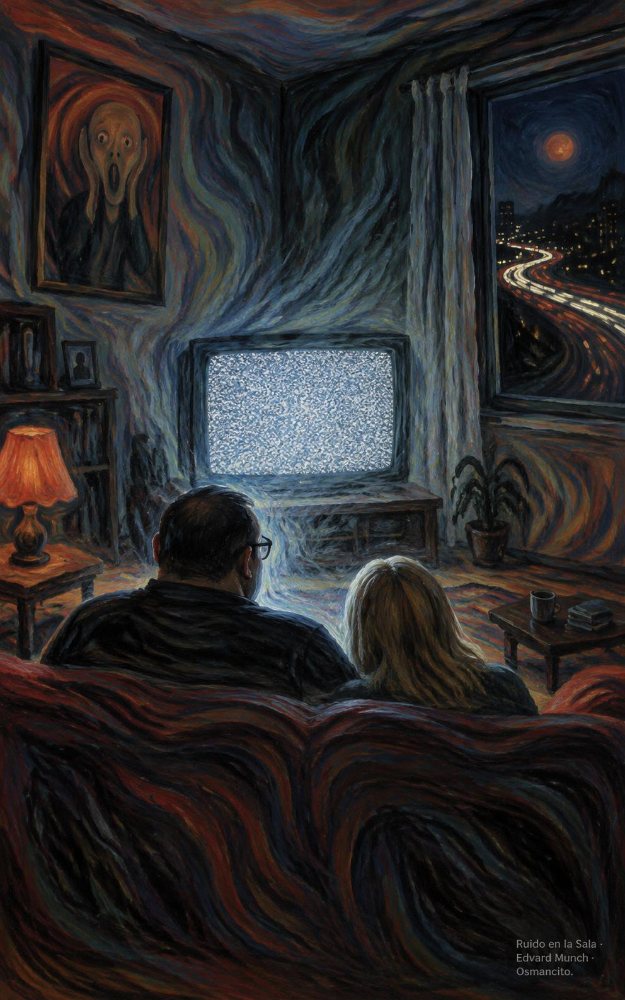
White Noise es una novela del escritor estadounidense Don DeLillo, publicada en 1985 por la editorial Viking. Ese año ganó el National Book Award, un premio literario de Estados Unidos.
Se divide en tres partes: «Waves and Radiation» («Ondas y Radiación»), «The Airborne Toxic Event» («El Evento Tóxico en el Aire») y «Dylarama». Suman cuarenta capítulos numerados, y ninguno trae título; aquí cada uno recibe el suyo. La narra Jack Gladney, profesor universitario.
Parte I: Ondas y Radiación
Capítulo 1: Las Camionetas
Jack, los estudios sobre Hitler, el espectáculo de la llegada y el rector.
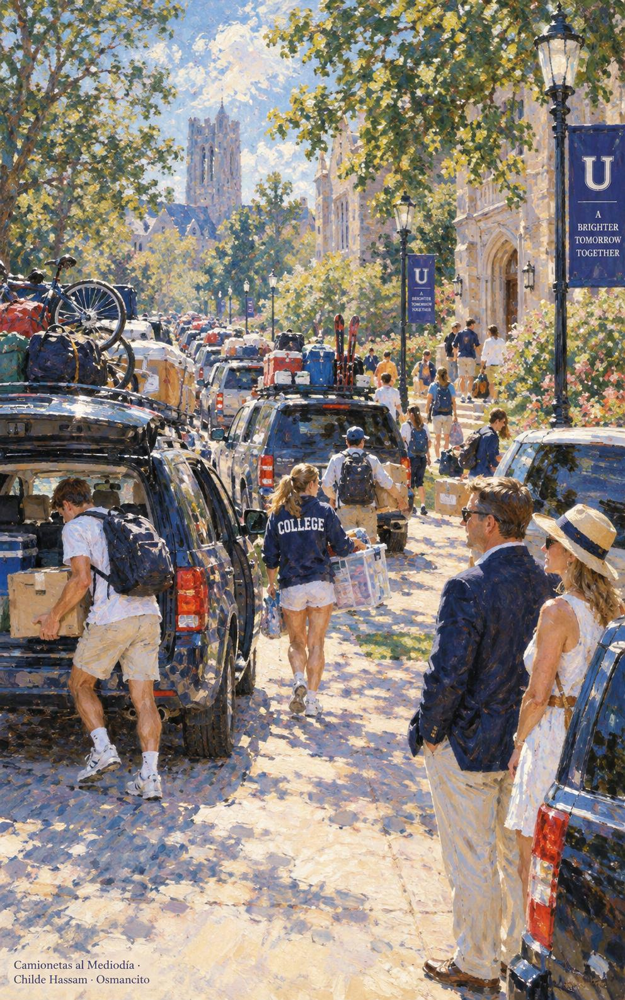
Las camionetas familiares llegan a mediodía al campus de una universidad, cargadas de maletas, y los estudiantes empiezan a descargarlas. El narrador, Jack, cuenta:
He presenciado este espectáculo cada septiembre durante veintiún años.
Frase 5
Los padres miran las camionetas con satisfacción. Jack baja al pueblo; vive con su esposa Babette en una calle tranquila:
Ahora hay una autopista más allá del patio trasero, mucho más abajo, y de noche, cuando nos acomodamos en nuestra cama de latón, el tráfico escaso pasa con un rumor, un murmullo remoto y constante alrededor de nuestro sueño, como de almas muertas que balbucean al borde de un sueño.
Frase 21
Jack dirige el departamento de estudios sobre Hitler de la universidad:
Inventé los estudios sobre Hitler en Norteamérica en marzo de 1968.
Frase 23
Fue un día frío y luminoso, cuando habló con el rector, la máxima autoridad de la universidad:
Cuando le sugerí al rector que podríamos construir un departamento entero en torno a la vida y la obra de Hitler, él vio enseguida las posibilidades.
Frase 25
Capítulo 2: Babette en la Cocina
Denise, Steffie, Jack, Babette, Wilder y el almuerzo.
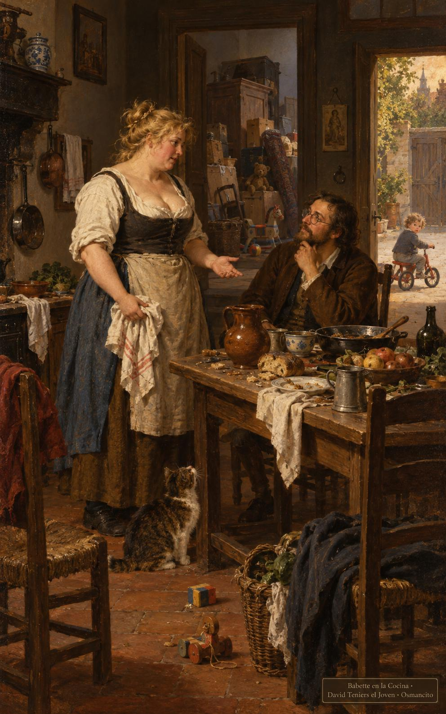
Es mediodía en la cocina de Jack, el narrador, y de su esposa Babette; Wilder, el menor de los niños, está sentado en el mostrador. Denise y Steffie, las niñas, bajan:
Denise y Steffie bajaron y hablamos de los útiles escolares que necesitarían.
Frase 79
Es la hora del almuerzo:
Entramos en un período de caos y ruido.
Frase 81
Dimos vueltas, discutimos un poco, dejamos caer utensilios.
Frase 82
Por fin quedamos todos satisfechos con lo que habíamos logrado sacar de los armarios y del refrigerador o quitarnos unos a otros, y empezamos a untar con calma mostaza o mayonesa en nuestra comida de colores vivos.
Frase 83
Babette dice que pensaba comer yogur y germen de trigo. Denise responde:
«¿Dónde hemos oído eso antes?», dijo Denise.
Frase 90
Las niñas dicen que Babette compra comida que luego tira. Jack la defiende, y ella dice que él hace virtudes de sus defectos. Arriba suena una alarma:
La alarma de humo sonó en el pasillo de arriba, o para avisarnos de que la pila acababa de morir o porque la casa se incendiaba.
Frase 112
Terminamos el almuerzo en silencio.
Frase 113
Capítulo 3: El Granero Fotografiado
Murray, el narrador, el calor, la gente, el granero y los profesores.
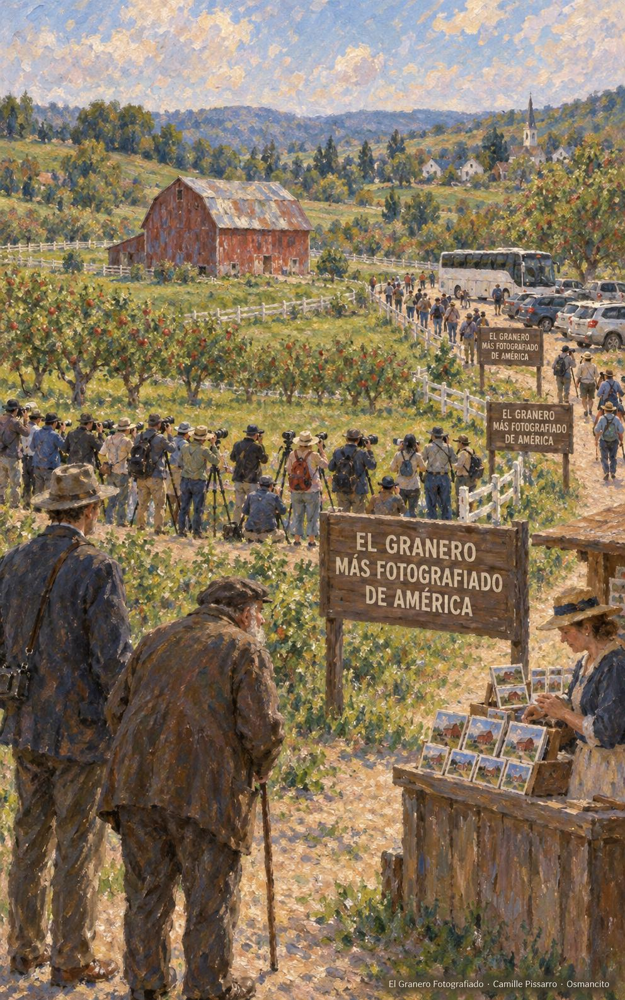
Los jefes de departamento usan togas académicas en el College-on-the-Hill. El departamento de Jack comparte edificio con el de cultura popular, cuyos profesores, casi todos emigrados de Nueva York, estudian los placeres brillantes de la cultura. Jack cuenta:
Una excepción a parte de lo anterior es Murray Jay Siskind, un ex periodista deportivo que me pidió almorzar con él en el comedor, donde el olor institucional de una comida vagamente definida despertó en mí un recuerdo oscuro y sombrío.
Frase 131
Murray es nuevo, encorvado y de barba amish; da clases sobre íconos vivos. Elogia lo que Jack ha creado en torno a Hitler y quiere hacer lo mismo con Elvis. Jack cuenta:
Varios días después, Murray me preguntó por una atracción turística conocida como el granero más fotografiado de América.
Frase 205
Jack y Murray manejaron veintidós millas por el campo y empezaron a ver carteles. Jack cuenta:
Contamos cinco carteles antes de llegar al lugar.
Frase 211
Había cuarenta autos y un autobús en el estacionamiento. Jack cuenta:
Caminamos por un sendero de vacas hasta el punto ligeramente elevado reservado para ver y fotografiar.
Frase 213
Todos tenían cámaras y un hombre vendía postales. Jack cuenta:
Nos paramos cerca de una arboleda y miramos a los fotógrafos.
Frase 216
Murray guardó silencio y anotó en una libreta. Dijo que nadie ve el granero: tras ver los carteles, es imposible verlo. Luego dijo:
«No estamos aquí para capturar una imagen, estamos aquí para mantener una.
Frase 223
Dice que cada foto refuerza el aura, una acumulación de energías sin nombre. Tras otro silencio:
«Estar aquí es una especie de entrega espiritual.
Frase 229
Solo vemos lo que ven los otros.
Frase 230
Habla de los miles que estuvieron allí y de los que vendrán. Murray sigue:
Hemos aceptado ser parte de una percepción colectiva.
Frase 232
Dice que es una experiencia religiosa, como todo turismo, y que la gente toma fotos de tomar fotos. Murray pregunta cómo era el granero antes de ser fotografiado y concluye:
No podemos responder a estas preguntas porque hemos leído los carteles y visto a la gente sacando las fotos.
Frase 241
No podemos salir del aura.
Frase 242
Somos parte del aura.
Frase 243
Estamos aquí, estamos ahora.»
Frase 244
A Jack le parece que Murray está muy contento.
Capítulo 4: ¿Quién Morirá Primero?
Jack, Babette, la pregunta de quién morirá primero, las chicas y Bee.
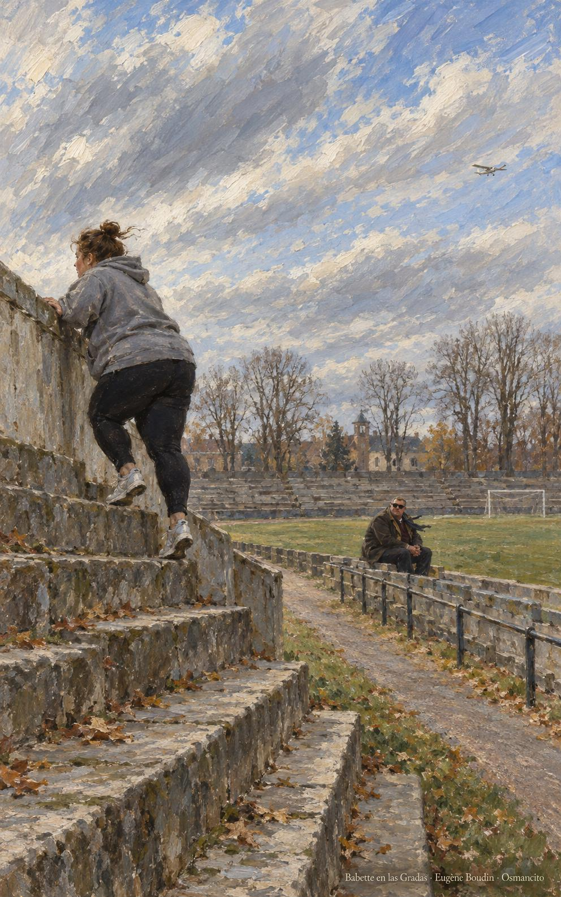
Jack, el narrador, mira desde un estadio a su esposa Babette, que corre por las gradas:
Su rostro estaba inclinado hacia arriba, captando el aire fresco, y no me vio.
Frase 259
Ella sube y baja varias veces. Jack baja a su encuentro:
Después del último descenso me reuní con ella al borde del campo de juego y la abracé, metiéndole las manos dentro de la cinturilla de sus pantalones grises de algodón.
Frase 266
Jack cuenta lo que hace Babette:
Planea viajes de esquí que nunca hacemos, con la cara radiante de ilusión.
Frase 276
A veces entre los dos surge la pregunta de quién morirá primero. Jack piensa:
Nos cura de nuestra inocencia sobre el futuro.
Frase 288
Treinta chicas pasan corriendo por la pista, en pantalón corto:
Vimos a las chicas dar otra vuelta.
Frase 290
Camino a casa Jack le dice a Babette que Bee, su hija de otro matrimonio, quiere visitarlos en Navidad:
Podemos ponerla con Steffie.»
Frase 294
Babette quiere que los viernes la familia vea televisión junta, para quitarle el encanto:
Esa noche, un viernes, pedimos comida china y vimos televisión juntos, los seis.
Frase 308
Los viernes Jack lee sobre Hitler hasta tarde:
Una de esas noches me metí en la cama junto a Babette y le conté cómo el rector me había aconsejado, allá por 1968, hacer algo con mi nombre y mi apariencia si quería que me tomaran en serio como innovador de Hitler.
Frase 320
Capítulo 5: Envases Blancos
Murray, Jack, Babette, el cuarto y el porche.
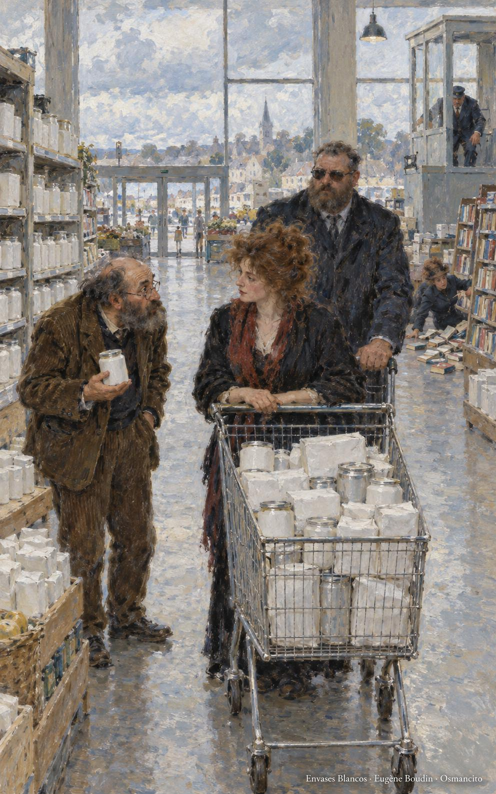
Jack, el narrador, y su esposa Babette se topan en el supermercado con Murray, un colega de Jack, cuya cesta lleva comida genérica en envases blancos. Murray elogia la nueva austeridad, el pelo de Babette y a Jack por tener una mujer así. Salen los tres:
Los tres salimos juntos, intentando maniobrar los carritos entre los libros de bolsillo esparcidos por la entrada.
Frase 411
Murray los ayuda con las bolsas:
Murray sacó uno de nuestros carritos al estacionamiento y luego nos ayudó a levantar y empujar toda nuestra mercancía en doble bolsa hasta la parte trasera de la camioneta.
Frase 412
Meten también la bolsa blanca de Murray y van hacia su pensión:
Pusimos la única bolsa liviana de Murray, con cosas blancas, en nuestra carga y cruzamos Elm rumbo a su pensión.
Frase 415
Murray se despide tomando la mano de Babette y dice:
«Les pediría que visitaran mi cuarto, pero es demasiado pequeño para dos personas, a menos que estén dispuestas a ser íntimas.»
Frase 418
Murray les da las gracias por el viaje. Jack y Babette lo miran irse:
Lo vimos caminar hacia el porche torcido, apuntalado con bloques de cemento, donde un hombre en una mecedora miraba al vacío.
Frase 428
Capítulo 6: ¿Llueve o No?
Heinrich, Jack, la radio y el escritorio.
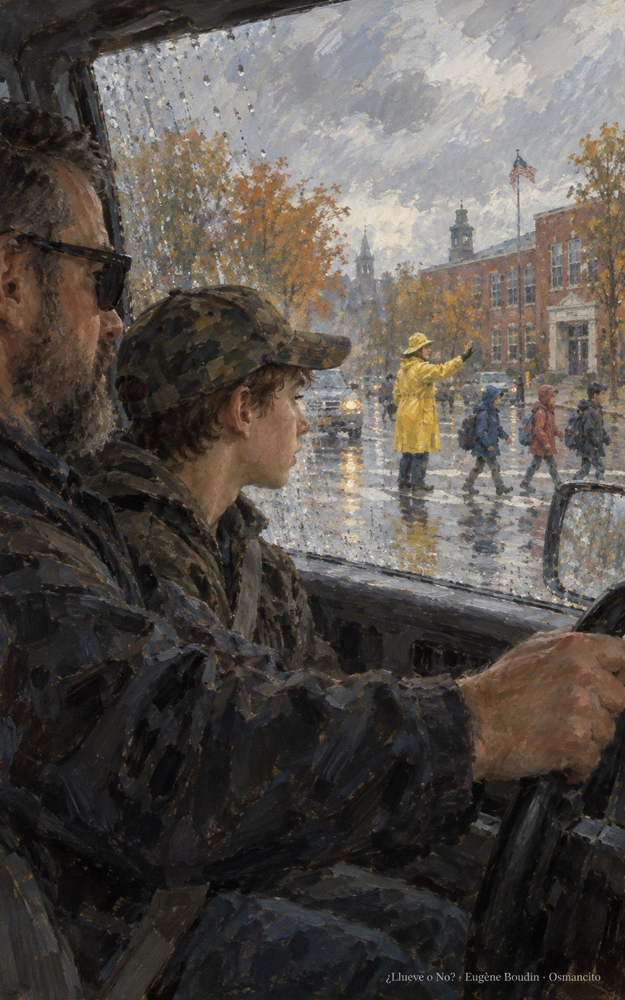
A Heinrich, de catorce años, le retrocede el nacimiento del pelo. Jack, su padre y el narrador, se pregunta si fue culpa suya:
¿Lo he criado, sin saberlo, en las cercanías de un vertedero químico, en el camino de corrientes de aire que arrastran desechos industriales capaces de producir degeneración del cuero cabelludo, atardeceres gloriosos?
Frase 433
Heinrich dice que lloverá esta noche; Jack responde que ya llueve. Jack lo lleva a la escuela:
Lo llevé en auto a la escuela en su primer día de regreso tras un dolor de garganta y fiebre.
Frase 442
Jack le pide que mire el parabrisas: ¿es lluvia o no? Heinrich contesta que solo repite lo que dijo la radio:
«Solo te digo lo que dijeron.»
Frase 447
Heinrich dice que los sentidos se equivocan. Jack imagina a un hombre con un arma que quiere saber si llueve. Heinrich pregunta qué verdad quiere ese hombre:
Quizá si esa gente pudiera vernos por un telescopio podríamos parecer de dos pies y dos pulgadas de alto, y podría estar lloviendo ayer en vez de hoy.»
Frase 475
Heinrich dice que «ahora» deja de serlo al decirlo. Jack replica:
«Si quieres hablar de esta localidad precisa mientras estás en un vehículo que obviamente se mueve, entonces creo que ese es el problema de esta discusión.»
Frase 495
Jack dice que o llueve o no llueve. Heinrich pide una prueba de que eso es lluvia y pregunta:
¿Cómo sé que lo que tú llamas lluvia es de verdad lluvia?
Frase 512
Heinrich dice que no está mojado y pregunta si Jack lo está. Jack insiste en la pregunta y al final dice:
«De primera», le dije.
Frase 520
Heinrich le dice que sea sarcástico. Jack lo mira partir:
Lo vi caminar bajo el aguacero hasta la entrada de la escuela.
Frase 530
Heinrich camina despacio y se quita la gorra de camuflaje antes de llegar a la puerta. Jack siente:
En momentos así descubro que lo amo con una desesperación animal, una necesidad de ponerlo bajo mi abrigo y estrujarlo contra mi pecho, mantenerlo ahí, protegerlo.
Frase 532
Heinrich parece atraer un peligro; Babette le hornea sus galletas favoritas. Jack y ella lo miran:
Lo vemos en su escritorio, una mesa sin pintar cubierta de libros y revistas.
Frase 536
Capítulo 7: Quién Complace a Quién
Babette, Jack, los ancianos y la lectura.
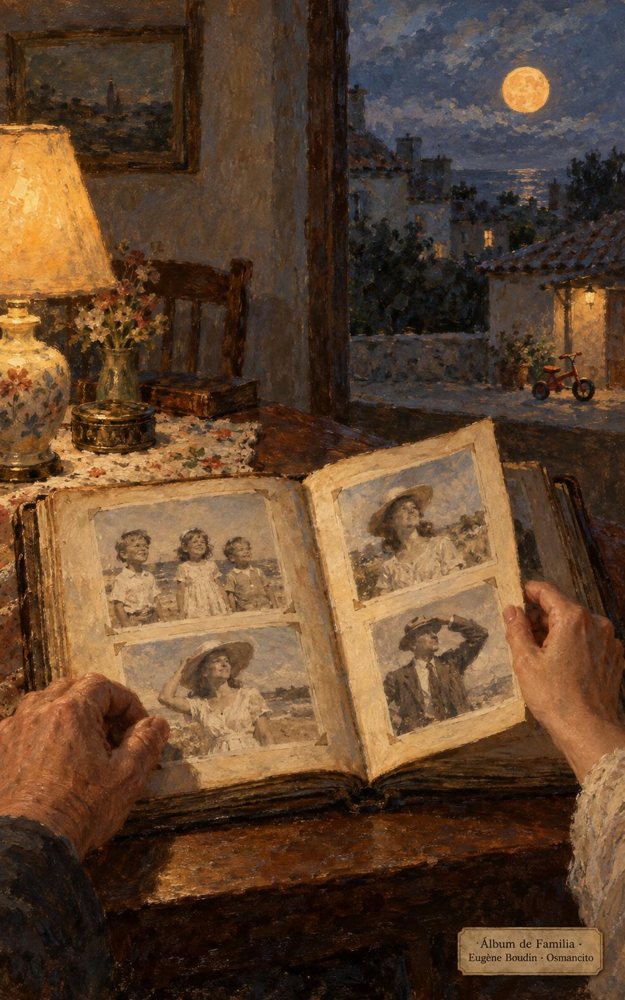
Dos noches por semana Babette enseña postura a ancianos en un sótano. Una noche, ya en la cama, discuten quién complace a quién. Babette dice que sabe que a Jack le gusta que ella lea cosas eróticas. Jack responde:
«Pensé que a ti también te gustaba.»
Frase 612
Babette dice que quien se beneficia es quien escucha, como cuando lee al viejo Treadwell. Jack contesta que él no es ciego. Ella responde:
«Si a ti te complace, entonces me gusta hacerlo.»
Frase 617
Jack insiste en que ella también debe disfrutar. Ella dice:
«Me complace que disfrutes mi lectura.»
Frase 620
Jack le ofrece épocas para la lectura, y cada uno quiere que elija el otro. Babette dice:
¿No queremos un equilibrio, una especie de toma y daca?
Frase 640
Jack dice que elegirá él y que ella leerá. Ella pone una condición:
«Pero no quiero que elijas nada que tenga hombres dentro de mujeres, comillas, comillas, o hombres entrando en mujeres. 'Yo entré en ella.' 'Él entró en mí.' No somos vestíbulos ni ascensores. 'Lo quería dentro de mí', como si pudiera meterse del todo, firmar el registro, dormir, comer, etcétera.
Frase 646
Ella inventa frases con un tal Rex y Jack siente una erección. Después Jack piensa en que Babette y él se cuentan todo, una forma de renovación y de confianza. Jack cuenta:
En estos relatos nocturnos creamos un espacio entre las cosas tal como las sentimos entonces y como las decimos ahora.
Frase 669
Ese espacio es de la ironía y la simpatía, y con él se rescatan del pasado. Jack elige el siglo veinte:
Me puse la bata y fui por el pasillo hasta la habitación de Heinrich a buscar una revista barata de la que Babette pudiera leer, de esas que traen cartas de lectores que detallan sus experiencias sexuales.
Frase 672
Heinrich le dice a Jack que busque abajo. Jack sube álbumes de fotos de familia, y pasan horas mirándolos en la cama. Se pregunta quién morirá primero.
Capítulo 8: Lecciones de Alemán
Dunlop, el casero, Murray y Jack.
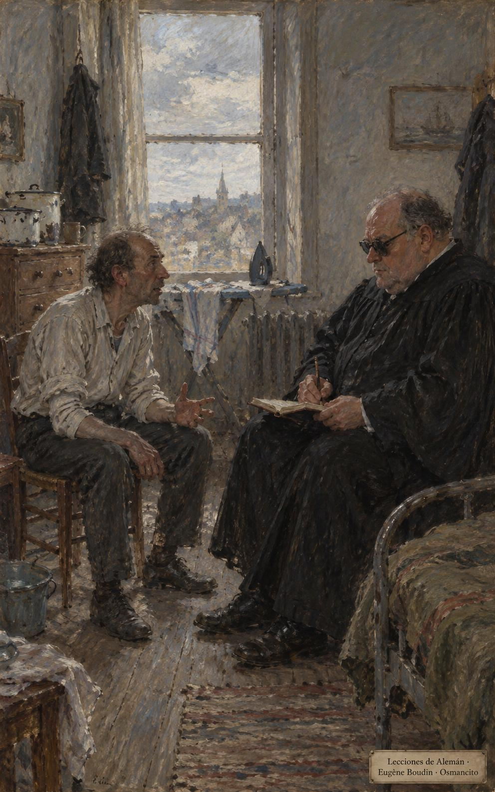
Jack, el narrador, es el mayor especialista en Hitler de Norteamérica y no sabe alemán. Por su fama quiere clases secretas:
Me puse en contacto con un hombre que no tenía relación con la universidad, alguien de quien me había hablado Murray Jay Siskind.
Frase 706
Ese hombre es Howard Dunlop, de unos cincuenta años, vecino de pensión de Murray:
Dijo que había sido quiropráctico, pero no ofreció ninguna razón por la que ya no ejerciera, ni dijo cuándo había aprendido alemán, ni por qué, y algo en sus modales me impidió preguntar.
Frase 712
En su cuarto oscuro y atestado, Dunlop da la clase. Al pasar del inglés al alemán le cambia la voz:
Solo estaba demostrando ciertos patrones básicos de pronunciación, pero la transformación de su cara y de su voz me hizo pensar que estaba haciendo un pasaje entre niveles del ser.
Frase 724
Jack toma notas y la hora pasa rápido. Luego va a buscar a Murray para cenar. En el porche de la pensión, Murray habla con el casero:
Nos detuvimos en el porche el tiempo justo para que Murray le contara al casero, que estaba sentado allí, de un grifo que goteaba en el baño del segundo piso.
Frase 731
Jack lo describe:
El casero era un hombre grande y rubicundo, de una salud tan robusta y desbordante que parecía estar sufriendo un infarto mientras lo mirábamos.
Frase 732
Murray dice que el casero lo arreglará, y salen a pie:
«Ya se pondrá a arreglarlo», dijo Murray, cuando echamos a andar rumbo a Elm.
Frase 733
Capítulo 9: La Invitación de Murray
Murray, Babette, Jack, Denise, Wilder y Steffie.
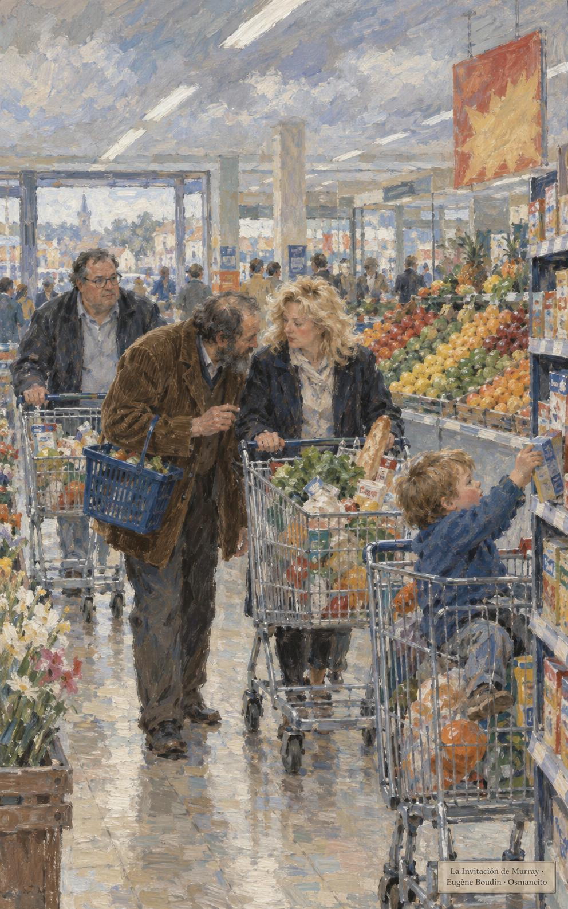
Jack, el narrador, cuenta que el martes evacuaron la escuela primaria de sus hijas: los niños sentían dolor de cabeza y sabor a metal. Nadie sabe la causa. Las dos chicas, Denise y Steffie, se quedan en casa; luego van al supermercado con Babette, su madre, y con Wilder, el hijo menor:
Las dos chicas, Babette, Wilder y yo fuimos al supermercado.
Frase 784
Minutos después de entrar, nos topamos con Murray.
Frase 785
Avanzamos juntos hacia el interior ultrafrío.
Frase 791
Wilder iba sentado en el carrito de la compra, intentando agarrar cosas de los estantes mientras pasábamos.
Frase 792
Murray, un colega de Jack, los acompaña:
Entramos en la zona de comida genérica y Murray se detuvo con su cesta de plástico a hurgar entre los cartones y los frascos blancos.
Frase 802
Murray anda por la zona de comida genérica. Jack oye a Babette hablar de Denise y su visera verde:
Oí a Babette decirle a Murray que la había llevado puesta catorce horas al día durante tres semanas ya.
Frase 841
Murray habla de la muerte y del Tíbet, y compara el supermercado con un lugar de paso. Pasan a buscar a Wilder, que se perdió de vista:
Los tres adultos se plantaron cada uno a la cabeza de un pasillo y escudriñaron el tráfico de carritos y cuerpos que se deslizaban.
Frase 909
Luego recorrimos tres pasillos más, con la cabeza adelantada, ondulando un poco al cambiar de línea de visión.
Frase 910
Los tres adultos, Jack, Babette y Murray, lo buscan por los pasillos hasta que Murray lo ve en el carrito de otra mujer. Luego Murray los invita:
Antes de ir a la caja rápida, Murray nos invitó a cenar el sábado en ocho días.
Frase 921
Jack y Babette dicen que irán. Murray les pide que no se sientan obligados:
«No tienen que avisarme hasta el último minuto.»
Frase 922
Dice que no es un compromiso firme:
Si no aparecen, sabré que surgió algo y que no pudieron avisarme.»
Frase 926
Y añade:
No quiero que sientan que los estoy atando a algo.
Frase 932
Murray dice que si no pueden, no pasa nada:
De todos modos tengo que comer, así que no hay una catástrofe mayor si surge algo y tienen que cancelar.
Frase 935
Solo quiero que sepan que estaré allí si deciden pasar, con niños o sin ellos.
Frase 936
Tienen hasta mayo o junio para decidir:
Tenemos hasta mayo o junio para hacer esto, así que no hay ninguna mística especial en un sábado en ocho días.»
Frase 937
Capítulo 10: El Chicle y el Preso
Tommy Roy, Heinrich, Babette, Jack, Steffie y Denise.
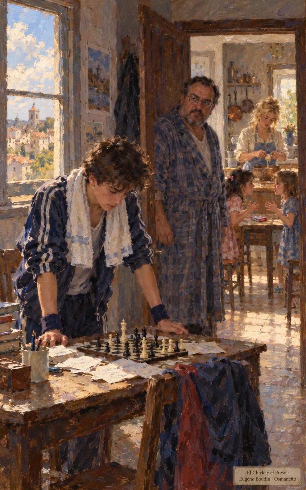
Denise, de once años, mira a su madre Babette abrir un paquete de chicles y dice que causan cáncer. Babette contesta:
«Querías que masticara chicle sin azúcar, Denise.
Frase 963
Denise dice que entonces el paquete no avisaba. Babette replica:
Pusieron una advertencia, y me costaría creer que no la vieras.»
Frase 966
Babette no le da importancia. Steffie, su hermana, cuelga. Babette rompe huevos:
Me lanzó una mirada que se preguntaba cómo la niña podía hablar por teléfono y escucharnos al mismo tiempo.
Frase 977
Quise decir que porque nos encuentra interesantes.
Frase 978
Babette dice que o mastica o fuma:
Si quieres que vuelva a fumar, quítame el chicle y mis Mentho-Lyptus.»
Frase 980
Steffie articula sin voz que los Stover quieren venir. Babette pregunta si los padres o los hijos. Steffie se encoge de hombros:
«No los queremos», dijo Babette.
Frase 1004
Los Stover quedan fuera. Babette dice que el chicle no daña; las niñas, que solo mata ratas. Denise dice que Babette olvida cosas. Jack, el padre, besa a Wilder, el hijo menor:
Luego lo puse sobre el mostrador y subí a buscar a Heinrich.
Frase 1033
Heinrich, el hijo mayor, juega ajedrez por correo con un preso. Dice que va bien:
Creo que lo tengo acorralado.»
Frase 1038
Jack quiere saber más. Heinrich dice que hoy importa la víctima:
¿Qué sabes de él, aparte de que está en la cárcel de por vida por asesinato?
Frase 1045
Jack pregunta si se hablan:
«A veces nos mandamos notas.»
Frase 1048
El preso, Tommy Roy Foster, mató a cinco en Iron City y a un policía. Jack pregunta si eran desconocidos o si fue un ajuste de cuentas:
¿Había estado oyendo voces?»
Frase 1080
Heinrich dice que eran desconocidos. Jack insiste:
«¿Había estado oyendo voces?»
Frase 1082
Heinrich dice que por televisión. Jack pregunta:
«¿Hablándole solo a él?
Frase 1084
¿Señalándolo?»
Frase 1085
Heinrich responde:
«Diciéndole que pasara a la historia.
Frase 1086
Heinrich dice que en Iron City no hay medios. Si Foster empezara de nuevo, lo haría como un magnicidio:
«Elegiría con más cuidado, mataría a una persona famosa, se haría notar y haría que el hecho perdurara.»
Frase 1095
Foster sabe que no pasará a la historia; Jack, que él tampoco. Jack tiene a Hitler (es profesor de estudios hitlerianos) y Foster nada. Jack le pregunta:
«Muy bien, te ha contado todas estas cosas en las cartas que manda.
Frase 1101
Heinrich responde que se le cae el pelo. Jack lo mira y nombra a su madre:
«Sé lo que dirías.
Frase 1107
Heinrich dice que su madre lo quiere en un ashram y duda de lo que quiere él.
Capítulo 11: El Cuarto de Murray
Babette, Jack, Murray, la gallina de Cornualles, el brazo de Jack y la posibilidad.
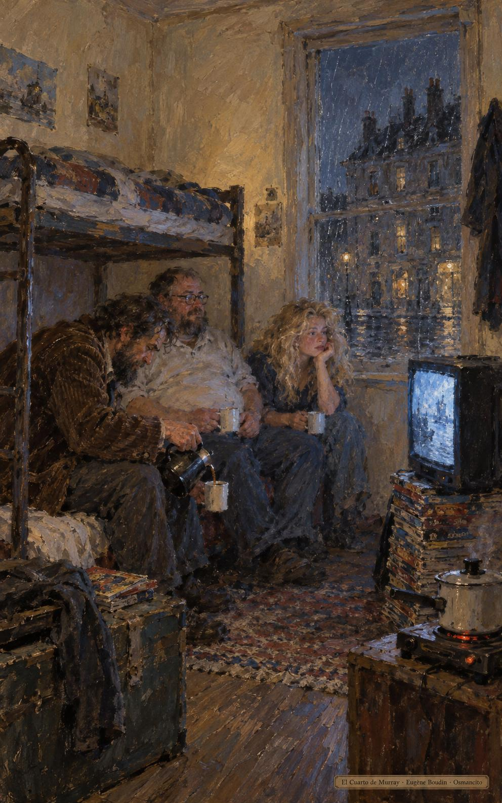
A las 3:51 de la madrugada Jack despierta con un sudor de muerte y se pregunta si la muerte es de número impar:
Babette murmuró en sueños y me acerqué, respirando su calor.
Frase 1149
Steffie, la hija de Jack, quema tostadas a propósito; el olor despierta a Jack, que baja a la cocina. Allí está Babette, su esposa:
Pensé que todavía estaba en la cama.
Frase 1161
Steffie pregunta por su madre, Dana Breedlove, con quien Jack estuvo casado, y si sigue en la CIA. Jack responde:
«No se supone que hablemos de eso.
Frase 1175
Una voz de computadora llama para una encuesta y Steffie la atiende. Jack le cuenta a Babette que Dana lo enredaba en intrigas. Babette le pregunta:
«¿Qué se siente tener casi cincuenta y uno?», dijo ella.
Frase 1214
Jack no siente diferencia con los cincuenta. Esa noche cenan en el cuarto de Murray:
Esa noche, en el cuarto blanquecino de Murray, después de una espléndida comida de gallina de Cornualles con forma de rana, preparada en una hornilla de dos fuegos, pasamos de nuestras sillas plegables de metal a la litera para tomar café.
Frase 1217
Murray cuenta que de periodista deportivo nunca se sintió en casa; ahora tiene un lugar propio. Babette lo felicita:
«Has hecho maravillas», dijo Babette, mientras su mirada recorría la habitación con desesperación.
Frase 1220
Murray llama a su cuarto un recipiente para pensar y habla del manicomio de enfrente. Después dice:
«Lamento que no hayan traído a los niños.
Frase 1231
Murray le dice a sus alumnos que ya son demasiado viejos para pesar en la sociedad:
Como estábamos sentados en la cama, Murray tuvo que inclinarse bien hacia adelante, mirando más allá de la taza de café que yo sostenía en la mano, para dirigirse a Babette.
Frase 1241
Murray pregunta cuántos hijos tiene Babette; ella nombra a Wilder, Denise y Eugene. Jack dice que el niño crece sin televisión. Murray responde:
«La tele solo es un problema si has olvidado cómo mirar y escuchar», dijo Murray.
Frase 1252
Murray les dice a sus alumnos que deben aprender a mirar como niños, y que lleva más de dos meses viendo televisión en su cuarto:
Una gran experiencia que enseña humildad, déjame decirte.
Frase 1262
Para Murray la televisión es una fuerza primaria del hogar estadounidense. Babette le pregunta:
«¿Cómo es que sabes tanto?», dijo Babette.
Frase 1284
Murray dice que es de Nueva York. Ella le pregunta:
«¿Alguna vez has estado casado?», dijo ella.
Frase 1288
Babette le pregunta si estuvo casado. Murray dice que una vez, brevemente, cuando cubría a los Jets:
No pienses que no apreciaría una visita dramática entre las dos y las tres de la madrugada», le dijo a ella, «de una mujer inteligente con tacones de aguja y falda con abertura, con accesorios de gran impacto.»
Frase 1292
Jack y Babette vuelven a casa:
Caía una llovizna mientras caminábamos a casa, con mi brazo alrededor de su cintura.
Frase 1293
Babette admite que olvida cosas. Jack le dice que Steffie le contó, y que ella lo oyó de Denise, que Babette toma algo además de chicle. Babette pregunta qué dice Denise:
«Quería preguntarte a ti antes de preguntarle a ella.»
Frase 1325
Babette dice que no toma nada que explique sus lapsos. Jack le dice que quizá Denise tiene razón. Ella responde:
«No podemos descartarlo.»
Frase 1329
Capítulo 12: Dunlop y el Clima
Jack, Dunlop, Bob Pardee, Babette, algo más, la compasión y los ojos.
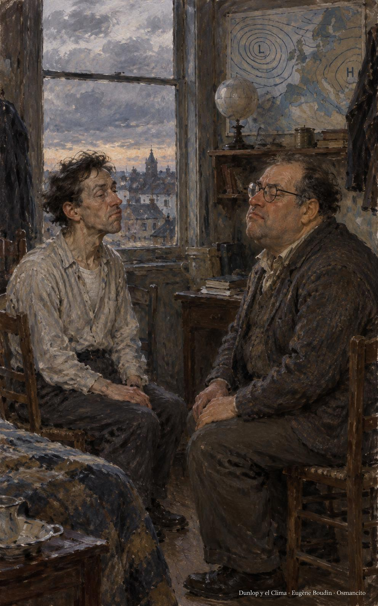
Jack toma clases de alemán dos veces por semana. Howard Dunlop exige que se sienten frente a frente toda la lección. Dunlop deforma la cara y hace muecas al pronunciar, y Jack lo imita:
Cuando llegaba el momento de que repitiera los ruidos, yo hacía lo mismo, aunque solo fuera para complacer al profesor, torciendo la boca, cerrando los ojos del todo, consciente de una sobrearticulación tan torturada que debía de haber sonado como una flexión repentina de la ley natural, una piedra o un árbol que se esfuerza por hablar.
Frase 1352
Dunlop mira a lo lejos, desprendido. Jack es su único alumno de alemán; también enseña griego, latín y navegación:
«¿Enseña algo más?», dije.
Frase 1376
Dunlop también enseña meteorología: tras la muerte de su madre vio por televisión a un joven pronosticando el tiempo y encontró paz; hoy da clases en sótanos de iglesias. En casa, Bob Pardee, el padre de Denise, practica su swing de golf en la cocina:
Dijo que iba de paso por la ciudad hacia Glassboro para hacer una presentación y pensó en llevarnos a todos a cenar.
Frase 1413
Denise le pregunta para qué son los fondos. Bob habla de una fundación para la defensa legal de la industria nuclear y dice que tiene hambre:
Vamos a acercarnos sigilosos a unas costillas, ¿por qué no?
Frase 1438
Bob lleva a los hijos mayores al Wagon Wheel. Jack acompaña a Babette a leerle al ciego Treadwell; ella sale y no hay nadie, ni él ni su hermana. La policía no sabe nada. En el Dinky Donut:
Me di cuenta de que Babette lo miraba con atención, tratando de captar el sentido de los cuatro años desbocados que habían pasado como marido y mujer.
Frase 1472
Bob bebía, apostaba, tiraba el auto por terraplenes y le pagó a una mujer para que le hablara en sueco; eso enfureció a Babette, que le pegó:
Ahora ella lo miraba con una tierna compasión, una reflexión que parecía honda, cariñosa y generosa como para contener todos los contrahechizos mágicos contra su actual racha de desgracias, aunque yo sabía, por supuesto, mientras volvía a mi libro, que era solo un afecto pasajero, una de esas bondades que nadie entiende.
Frase 1477
Al día siguiente, al mediodía, dragan el río.
Capítulo 13: La Vidente de la Policía
La sobrina nieta, Heinrich, los Treadwell y Babette.
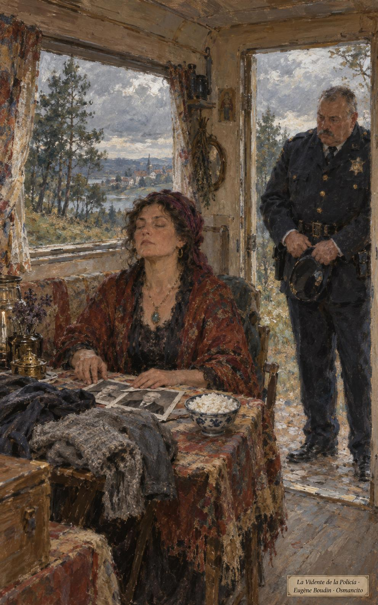
En Blacksmith, el pueblo, Babette llama a Jack a su oficina para hablar de los Treadwell, un anciano y su hermana desaparecidos, y de Heinrich, el hijo de Jack:
Dijo que Heinrich había estado en el río, con su gorra de camuflaje y una Instamatic, para ver cómo dragaban en busca de los cuerpos, y que mientras estaba allí llegó la noticia de que habían encontrado a los Treadwell vivos pero estremecidos en un quiosco de galletas abandonado del Mid-Village Mall, un enorme centro comercial junto a la autopista.
Frase 1488
Los Treadwell vagaron dos días por el centro comercial y pasaron otros dos en el quiosco. Antes, la policía había consultado a una vidente, Adele T., que la guió hacia tierra seca. Nadie sabe cómo llegaron allí:
Posiblemente su sobrina nieta los había dejado allí en su coche y después se había olvidado de ir a buscarlos.
Frase 1496
Babette dice que no pudieron localizar a la sobrina nieta. El misterio americano se profundiza.
Capítulo 14: El Desvanecimiento Cerebral
Jack, Grappa, Denise, Lasher, Alfonse, Cotsakis, Babette, Heinrich y Murray.
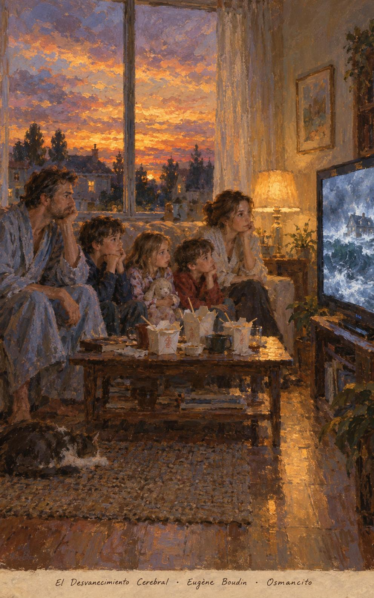
Jack cuenta:
Nos apiñamos ante la ventana en el cuarto pequeño de Steffie, viendo la espectacular puesta de sol.
Frase 1509
Más tarde Jack estudia alemán en la cama. Denise entra y se tumba a los pies, de espaldas a él. Pasa un minuto. Denise dice:
«¿Qué vamos a hacer con Baba?», dijo ella.
Frase 1517
Denise cuenta que Babette no recuerda nada y que encontró en la basura un frasco de Dylar, uno cada tres días. No sale en su libro de fármacos. Jack dice que debe ser reciente y ofrece:
«¿Quieres que vuelva a mirar el libro?»
Frase 1539
Denise responde que ya miró; Jack propone otra salida:
«Miré.» «Siempre podríamos llamar a su médico.»
Frase 1541
Jack no quiere darle demasiada importancia: todos toman algo y olvidan cosas. Denise sigue queriendo saber. Jack cuenta:
Pero ahora cambió de postura, se apoyó en un codo para incorporar la parte superior del cuerpo y me observó con aire especulativo desde los pies de la cama.
Frase 1559
«¿Puedo preguntarte algo?»
Frase 1560
Ella pregunta por qué Jack le puso Heinrich a su hijo Heinrich. Jack responde que le pareció un nombre fuerte, con autoridad, y que quería protegerlo. Hubo un largo silencio. Jack cuenta:
Siguió mirándome.
Frase 1583
Con los rasgos apretados en el centro de la cara, tiene en la concentración un aire de dogo medio beligerante. Ella pregunta:
«¿Crees que me equivoqué en el cálculo?»
Frase 1585
Jack dice que no le toca decirlo. Hablan de Hitler, que siempre sale en televisión, y de los uniformes. Steffie entra con la visera verde de Denise. Jack cuenta:
Se subió a la cama y los tres repasamos mi diccionario alemán-inglés, buscando palabras que suenan casi igual en los dos idiomas, como orgy y shoe.
Frase 1607
Heinrich llama a ver imágenes de un accidente aéreo y todos corren al televisor. Jack llega tarde y solo ve humo negro. Jack cuenta:
Teníamos dos puertas de armario que se abrían solas.
Frase 1617
Esa noche, un viernes, nos reunimos frente al aparato, como era costumbre y regla, con comida china para llevar.
Frase 1618
Había inundaciones, terremotos, deslaves y volcanes en erupción. Jack cuenta:
Nunca antes habíamos estado tan atentos a nuestro deber, nuestra reunión de los viernes.
Frase 1620
Heinrich no estaba hosco ni Jack aburrido. Steffie casi llora ante una comedia; Babette quiso cambiar de canal y se asombró de la protesta. Jack cuenta:
Por lo demás permanecíamos en silencio, viendo casas deslizarse hacia el océano, aldeas enteras crepitar y encenderse en una masa de lava que avanzaba.
Frase 1625
Cada desastre nos hacía desear más, algo más grande, más imponente, más arrasador.
Frase 1626
El lunes Murray espera a Jack en su oficina: no logra imponer su base de Elvis Presley en el departamento. En el almuerzo Jack ve a Alfonse presidir la mesa de los emigrados de Nueva York. Jack cuenta:
Una vez me dijo que el arte de salir adelante en Nueva York se basaba en aprender a expresar la insatisfacción de manera interesante.
Frase 1641
Alfonse aplasta toda opinión ajena. Jack cuenta:
Le dije: «¿Por qué es, Alfonse, que personas decentes, bienintencionadas y responsables se sienten intrigadas por la catástrofe cuando la ven por televisión?»
Frase 1650
Le conté la reciente velada de lava, barro y aguas furiosas que a los niños y a mí nos había resultado tan entretenida.
Frase 1651
Alfonse dice que es natural: sufrimos de desvanecimiento cerebral y necesitamos catástrofes que ocurran en otra parte, como California. Murray añade que la gente ha olvidado cómo mirar y escuchar. Grappa lanza medio panecillo a Lasher para llamar su atención y le dice:
Grappa le dijo: «¿Alguna vez te lavaste los dientes con el dedo?»
Frase 1702
Lasher, Cotsakis y Murray cuentan dónde se lavaron los dientes con el dedo. Alfonse pregunta dónde estaban cuando murió James Dean, y Grappa dice tener lagunas. Jack cuenta:
Vi a Grappa lanzar una galleta salada a Murray.
Frase 1781
La lanzó de revés, como un frisbi.
Capítulo 15: La Madre y la Multitud
Hitler, Elvis, Jack, Gladys, Murray y las multitudes.
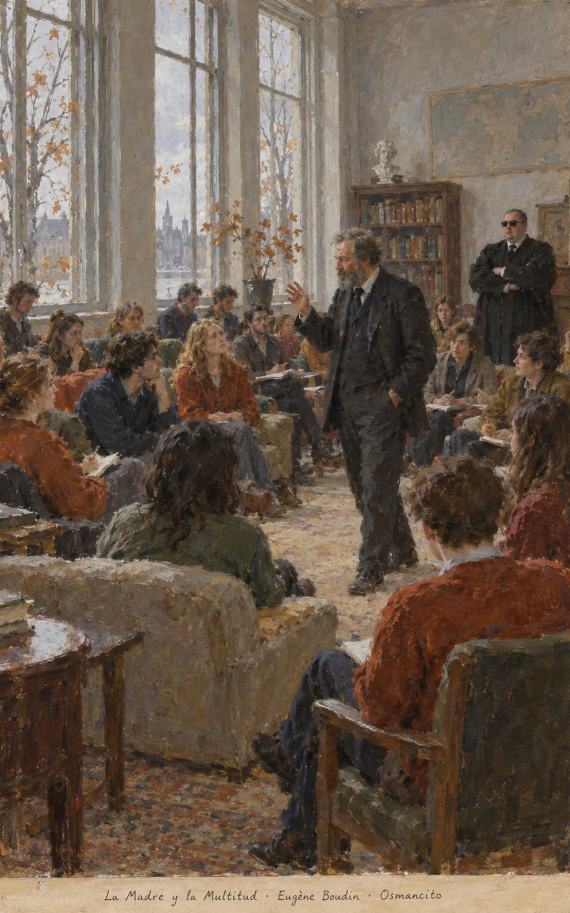
Jack, con gafas oscuras y toga negra, entra en el aula de Murray. Murray habla de Elvis y de su madre, Gladys, y dice que las madres saben. Jack contesta:
«Hitler adoraba a su madre», dije.
Frase 1800
Un rumor de atención recorre el aula. Murray sigue andando, con más cuidado, entre los estudiantes.
«A Elvis y a Gladys les gustaba acurrucarse y acariciarse», dijo.
Frase 1804
«Dormían en la misma cama hasta que él empezó a acercarse a la madurez física.
Frase 1805
Hablaban entre sí en lenguaje de bebé a todas horas.»
Frase 1806
Jack habla de Hitler y de su madre, Klara, que lo mimaba. Murray, de Gladys, que llevaba a Elvis al colegio cada día. Murray dice:
Lo defendía en pequeñas riñas callejeras y arremetía contra cualquier chico que intentara intimidarlo.»
Frase 1812
Jack cuenta que Hitler fantaseaba, tocaba el piano y dibujaba, y Klara lo toleraba. Murray dice que Elvis se confiaba a Gladys.
Llevaba a sus novias para que la conocieran.»
Frase 1820
Murray cuenta que Gladys enfermó cuando Elvis entró en el ejército. Un estudiante murmura «Mutter-söhnchen» y Jack se pone a pasear como Murray. Murray dice:
«Elvis apenas soportaba dejar que Gladys se le fuera de la vista cuando su estado empeoró.
Frase 1831
Le habló en lenguaje de bebé hasta que estuvo bajo tierra.»
Frase 1837
Hitler lloró en la tumba de Klara. Murray se sienta en el suelo. Jack imagina a Hitler mirando atrás desde el búnker:
¿Pensó en los pequeños grupos de turistas que visitaban el pequeño poblado donde nació su madre y donde él había pasado los veranos con sus primos, montando en carretas de bueyes y haciendo cometas?
Frase 1865
Los turistas honraban el lugar donde nació Klara y entraban en la granja. Luego llegaron multitudes que cantaban canciones patrióticas y pintaban esvásticas en las paredes. Jack sigue:
Llegaron multitudes a su villa de montaña, tanta gente que tuvo que quedarse dentro.
Frase 1872
Se llevaban a casa guijarros que él había pisado.
Llegaban multitudes a oírlo hablar, multitudes cargadas de erotismo, las masas que él llamó una vez su única novia.
Frase 1874
Jack cuenta hasta siete mirando la alfombra. Luego dice que las multitudes se reunían en nombre de la muerte. Murray lo mira agradecido. La gente se junta alrededor y Jack comprende que ya son una multitud.
Capítulo 16: El Llanto de Wilder
Jack, Babette, Wilder, el médico y el llanto.
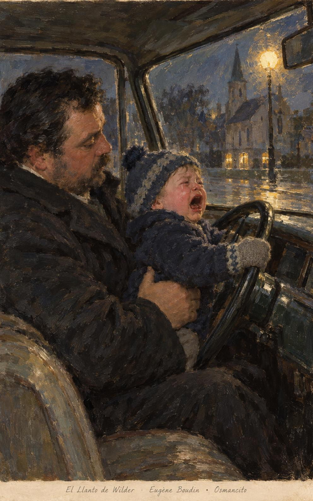
Wilder empezó a llorar a las dos de la tarde. Jack, que lo cuenta, recuerda la hora de la cena:
A las seis seguía llorando, sentado en el suelo de la cocina y mirando por la ventanilla del horno, y cenamos deprisa, moviéndonos a su alrededor o pasando por encima de él para llegar a los fogones y al frigorífico.
Frase 1909
Babette tiene que dar en una hora y media su clase de sentarse, estar de pie y caminar a unos ancianos en el sótano de una iglesia. Ya le ha hablado con suavidad, lo ha bañado y lo ha examinado. Jack dice:
«Vamos a llevarlo al médico», dije.
Frase 1918
Hablan de qué médico podría ver a un niño que llora, y deciden ir. Jack cuenta:
Pero una vez decidido que iríamos al médico, empezamos a apresurarnos, a inquietarnos.
Frase 1928
Buscamos la chaqueta y los zapatos de Wilder, tratamos de recordar qué había comido en las últimas veinticuatro horas, anticipamos las preguntas del médico y ensayamos con cuidado las respuestas.
Frase 1929
Les parece vital coincidir en las respuestas: los médicos pierden interés en quienes se contradicen. Jack cuenta:
Esperé en el coche mientras Babette y Wilder entraban en el edificio médico, al final de Elm.
Frase 1933
A Jack los consultorios lo deprimen más que los hospitales. Al salir, madre e hijo cruzan la acera y Jack los ve:
El niño caminaba junto a su madre, de la mano, todavía llorando, y parecían una imagen de tristeza y calamidad tan aficionada que casi me eché a reír, reír no de la tristeza sino de la imagen que daban de ella, del desajuste entre su dolor y sus apariencias.
Frase 1939
Jack pregunta qué dijo el médico: que le dé una aspirina y lo acueste, lo mismo que dijo Denise. Babette cuenta lo que contestó el médico:
Dijo: «Bueno, ¿y por qué no lo hizo?»
Frase 1948
Ya en el coche el llanto cambia de tono y se vuelve lamento. Jack pregunta qué hacen. Babette dice que piense algo, que faltan quince minutos para su clase:
Llevémoslo al hospital, a la entrada de urgencias.
Frase 1969
Babette dice que llorar no es una urgencia y que la lleve a su clase. Jack la deja en la iglesia y se queda con Wilder, que lleva seis horas llorando. Lo sienta contra el volante, escucha el llanto y casi se duerme. Cuando Babette vuelve:
Íbamos a medio camino de casa cuando se detuvo el llanto.
Frase 2023
En casa nadie habla. Cuando Wilder pide leche, Denise corre descalza a la cocina, y él se la bebe de un trago. Es como si volviera de un lugar remoto y santo.
Capítulo 17: La Cuna de la Desinformación
Jack, Babette, Denise, Steffie, Heinrich, Wilder y la comida.
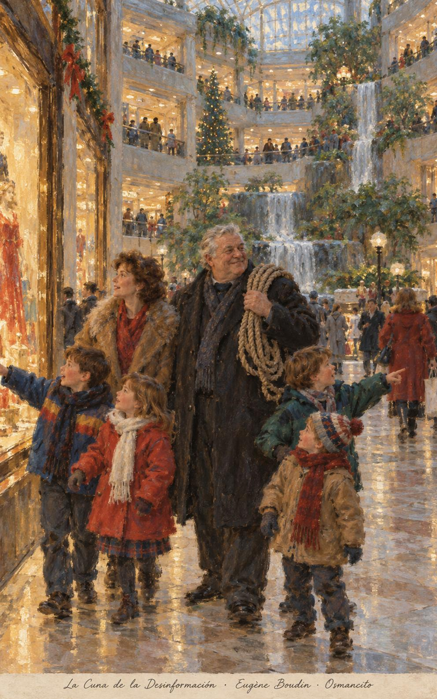
Una noche Babette dice que pronto habrá otro niño en casa: Bee llega en un par de días. Al día siguiente Denise quiere sonsacar a su madre sobre la medicación que toma o no toma. Los seis van en el coche al centro comercial:
Los seis íbamos apretados en el coche camino del centro comercial Mid-Village y Denise esperó sin más una pausa natural en la conversación para dirigir su pregunta a la nuca de Babette, con una voz vaciada de inferencias.
Frase 2044
La charla se desvía: Babette cree que el Dylar es una chica, y hablan de camellos y de Bolivia. Jack piensa en la familia como cuna de la desinformación. En una ferretería del centro comercial se cruza con Eric Massingale, que le dice que es otra persona. Eso le da ganas de comprar. Jack cuenta:
Encontré a los otros y cruzamos dos aparcamientos hasta el edificio principal del Mid-Village Mall, un edificio de diez plantas dispuesto en torno a un patio central de cascadas, paseos y jardines.
Frase 2134
Babette y los niños me siguieron al ascensor, a las tiendas dispuestas en los pisos, por los emporios y los grandes almacenes, desconcertados pero entusiasmados por mi deseo de comprar.
Frase 2135
Cuando no podía decidirme entre dos camisas, me animaban a comprar las dos.
Frase 2136
Cuando dije que tenía hambre, me dieron de comer pretzels, cerveza, souvlaki.
Frase 2137
Las dos chicas van delante, buscando cosas que él podría querer, y suena un órgano en el patio.
Olíamos chocolate, palomitas, colonia; olíamos alfombras y pieles, salamis colgados y vinilo sepulcral.
Frase 2142
Su familia se gloria con el acontecimiento. Jack se siente uno de ellos, comprando por fin.
Me daban consejos, acosaban a los dependientes en mi nombre.
Frase 2145
Íbamos de tienda en tienda, rechazando no solo artículos de ciertos departamentos, no solo departamentos enteros sino tiendas completas, corporaciones gigantescas que por una razón u otra no nos llamaban la atención.
Frase 2147
Siempre hay otra tienda. Jack compra sin freno y se siente crecer. Manda a los niños a elegir sus regalos de Navidad, y ellos se dispersan y avisan en secreto a Babette de lo que escogen. Jack es el benefactor. Los niños saben que no se le puede pedir que discuta los detalles.
Hicimos otra comida.
Frase 2171
Suena música enlatada en vivo y el rugido de las voces sube diez pisos. Vuelven a casa en silencio, cada uno a su cuarto. Jack ve a Steffie ante el televisor, moviendo los labios para igualar las palabras.
Capítulo 18: Tweedy y el Aterrizaje Forzoso
Tweedy, Jack, Bee, Janet y los niños.
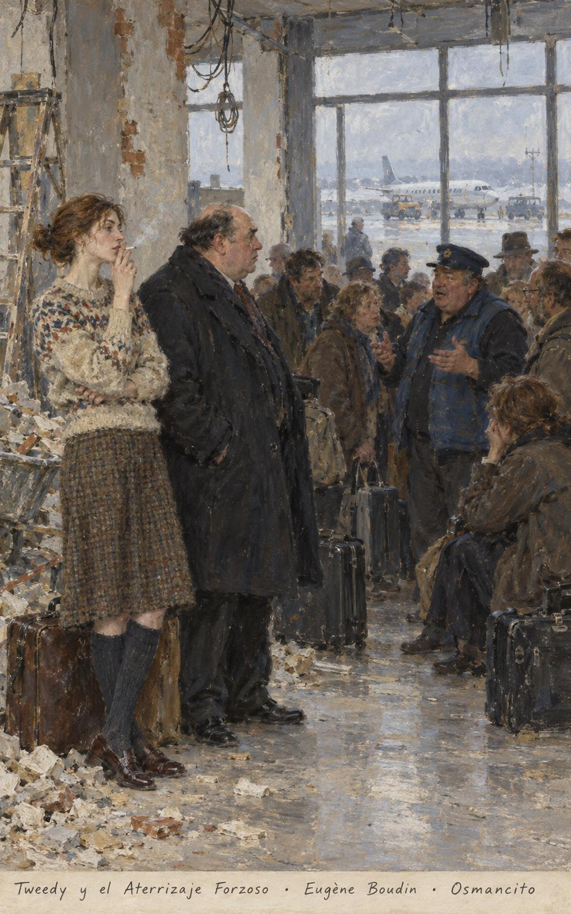
Jack va al aeropuerto de Iron City a buscar a Bee, su hija de doce años. Quien aparece en la sala de llegadas es la madre de Bee, Tweedy Browner:
Por un momento pensé que Bee había muerto y que Tweedy había venido a decírmelo en persona.
Frase 2191
Tweedy dice que Bee viene con su padre. Jack responde que el padre es él; ella habla de Malcolm Hunt, su marido. Pregunta:
«¿Todavía me quieres, Tuck?», dijo ella.
Frase 2204
Me llamó Tuck, que es como su madre solía llamar a su padre.
Frase 2205
Los Browner llaman Tuck a todos sus hombres y a quien se casa con ellos. Jack fue el primero. Jack pregunta por tercera vez dónde está Bee. Tweedy dice que en Indonesia, más o menos, y que Malcolm trabaja en secreto para derrocar a Castro. Y propone:
«Salgamos de aquí, Tuck, antes de que vengan niños en enjambre a mendigar.»
Frase 2222
Bee sabrá arreglárselas, dice Tweedy. En el aeropuerto no hay bares ni restaurantes.
Recogimos el equipaje de Tweedy, salimos al coche y atravesamos Iron City, junto a fábricas desiertas, por avenidas casi siempre desiertas, una ciudad de colinas, con alguna calle empedrada, hermosas casas antiguas aquí y allá, coronas de Navidad en las ventanas.
Frase 2231
Tweedy dice que no es feliz. Jack pregunta por qué. Ella contesta:
«Pensé que me querrías para siempre, francamente.
Frase 2234
Depende de él para eso, dice, porque Malcolm está muy a menudo fuera. Jack contesta:
«Nos divorciamos, tú te quedas con todo mi dinero, te casas con un diplomático acomodado, bien relacionado y bien trajeado que hace entrar y salir agentes de zonas delicadas e inaccesibles.»
Frase 2237
Tweedy dice que Malcolm siempre se ha sentido atraído por lugares selváticos.
Viajábamos en paralelo a las vías del ferrocarril.
Frase 2239
Jack cuenta que Janet Savory se ha ido a un ashram de Montana, donde ahora se llama Madre Devi. Dice que tenía talento para el sigilo, y Tweedy le dice que habla con amargura:
«Nunca te he conocido amargado, Tuck.»
Frase 2252
Jack cuenta que Janet lo metió, al nacer Heinrich, en un plan de inversiones complejo. Tweedy dice que ella se equivocó y que perdieron mucho; Jack, que ganaron. Dice:
«Quería constituirnos en sociedad.»
Frase 2266
Tweedy no reconoce a esa Janet y recuerda sus pómulos altos. Luego pregunta:
«¿No hay algún sitio donde podamos conseguir una comida civilizada?», dijo Tweedy.
Frase 2275
Quiere un sitio con manteles y recuerda que tomó el té con el coronel Gadafi.
Atravesamos un barrio de almacenes, más calles desiertas, una desolación y un anonimato que se registraban en la mente como un anhelo fantasmal de algo que estaba muy lejos de poder recuperarse.
Frase 2280
Tweedy fuma sin parar y dice:
«Dios, Tuck, qué bien estábamos juntos.»
Frase 2283
Tweedy va a Boston a tranquilizar a su madre, que cree muerto a Malcolm. Jack dice que es un día gris y propone:
«Más vale que volvamos al aeropuerto.»
Frase 2311
Tweedy pregunta por Hitler y le dice a Jack que no ha cambiado. Y añade:
Nos queríamos, ¿no es verdad?
Frase 2319
Nos contábamos todo, dentro de los límites de la preocupación de cada uno por la educación y el tacto.
Frase 2320
Dice que Malcolm no le cuenta nada y que no sabe quién es.
Se sentó con las piernas recogidas bajo el cuerpo, de cara a mí, y echó cenizas en sus zapatos, que estaban sobre la alfombrilla de goma.
Frase 2324
Pregunta si no fue maravilloso crecer entre caballos. Jack contesta que no le pregunte a él.
En el aeropuerto esperamos en una neblina de polvo de yeso, entre cables al descubierto, montones de escombros.
Frase 2329
Media hora antes de que llegue Bee, pasajeros de otro vuelo cruzan un túnel. Un hombre con gorra de cartero cuenta que el avión perdió potencia en los tres motores y cayó de treinta y cuatro mil a doce mil pies, y que una voz serena habló de aterrizaje forzoso: la diferencia es solo una palabra. Luego los motores arrancaron. Jack ve a Bee, que salta a sus brazos y pregunta dónde están los medios. Jack dice que en Iron City no hay.
Encontramos a Tweedy y salimos hacia el coche.
Frase 2409
Bee se sienta en el asiento trasero en posición de loto, descansada tras un viaje desde Surabaya.
Había un atasco en las afueras de la ciudad y tuvimos que quedarnos parados en una carretera junto a una fundición abandonada.
Frase 2410
Ahora estábamos sentados esperando en la oscuridad a que remolcaran un coche o se cerrara un puente levadizo.
Frase 2414
Tweedy dice que los aviones y las terminales son los lugares más seguros para los niños, y que Bee voló sola a Boston a los nueve años.
Capítulo 19: Bee, la Testigo Silenciosa
Bee, Jack, Denise y la familia.
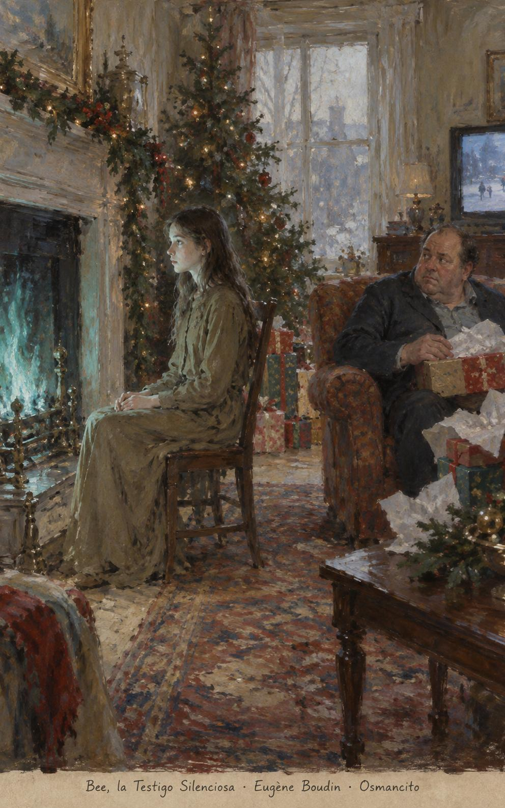
Bee, la hija de doce años de Jack, ha llegado a la casa. Jack cuenta:
Bee nos hacía sentir cohibidos de vez en cuando, un castigo que los visitantes infligen sin querer a sus anfitriones complacientes.
Frase 2435
Todo lo que hacen parece necesitar explicación, y Babette está especialmente desconcertada. Jack dice:
Si Denise era una comisaria de tamaño de bolsillo, que nos acosaba hacia una conciencia más alta, entonces Bee era una testigo silenciosa, que ponía en entredicho el sentido mismo de nuestras vidas.
Frase 2440
Babette mira sus manos ahuecadas, horrorizada. Bee, un año mayor que Denise, es más alta, delgada y pálida, y desdeña los chistes familiares.
Era dueña de sí y reflexiva, y nos había traído regalos tallados a mano de las selvas.
Frase 2445
Toma taxis a la escuela y a la clase de baile, y habla un poco de chino.
La admiraba de un modo distante e inquieto, percibiendo una amenaza sin nombre, como si no fuera hija mía en absoluto sino la amiga sofisticada y autosuficiente de uno de mis hijos.
Frase 2447
Jack se pregunta si Murray tiene razón en que son una unidad frágil rodeada de hechos hostiles. En Navidad, Bee dice junto a la chimenea que su madre está tensa por culpa de Malcolm y que no sabe quién es. En sus ojos se mueve una vida secundaria. Jack se pregunta:
¿Qué significaba aquello, qué decía en realidad, por qué parecía esperar que yo respondiera de la misma manera?
Frase 2481
Bee quiere comunicarse así y descubrir algo sobre él. Jack empieza a preocuparse.
Mientras el olor a tostada quemada llenaba la casa, intenté que me hablara de la vida en séptimo grado.
Frase 2486
Steffie quema tostadas, y Bee dice que podría haber preparado un kimchi. Jack dice:
«Probablemente comeremos algo además de tostadas», dije.
Frase 2496
Su leve reproche la hace feliz.
Le gustaba más cuando yo era seco, burlón y cortante, un talento natural que creía que yo había perdido por tanto trato con niños.
Frase 2498
Dos noches después Steffie se baña en agua sucia, porque es su suciedad, y Bee aparece en el pasillo con un quimono, distante. Por la mañana Jack la lleva al aeropuerto; ella lo mira con compasión solemne, que él reconoce como condescendencia adolescente. De regreso aparca junto a un cementerio y escucha.
Capítulo 20: Babette en la Pantalla
Jack, Babette, Murray, Heinrich y Denise.
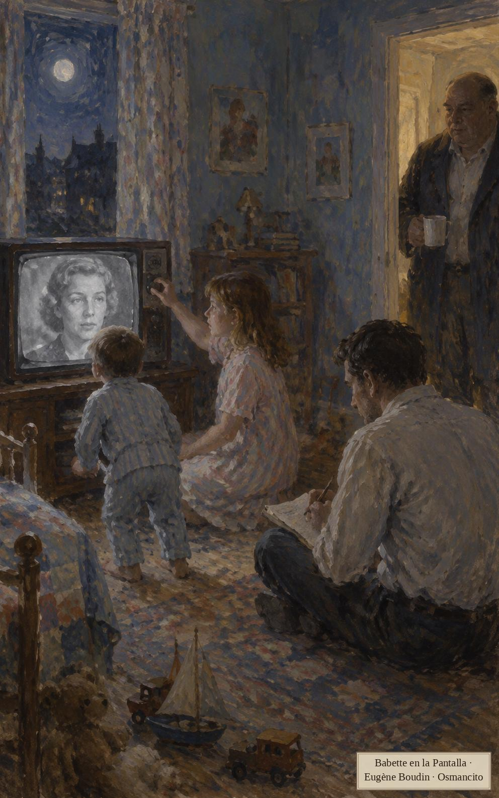
Jack lee obituarios y calcula cuántos años le quedan. Babette le dice en el desayuno que la vida es buena y que tiene sueños terribles. Luego discuten quién morirá primero. Jack cuenta:
Desea sinceramente precederme.
Frase 2591
Discute el asunto con tal fuerza argumentativa que es evidente que cree que tenemos elección en la materia.
Frase 2592
Estamos a salvo mientras ellos estén cerca.
Frase 2595
Teme que yo muera inesperadamente, a hurtadillas, escabulléndome en la noche.
Frase 2598
Jack responde:
Le digo que quiero morir yo primero.
Frase 2602
Somos dos versiones de la misma persona.
Frase 2604
Discuten quién dejaría el agujero más grande en la vida del otro.
Tenemos discusiones serias en este nivel.
Frase 2610
Babette sale a dar su clase de postura. Murray viene a hablar con los niños para su investigación sobre la sociedad de los niños. Jack cuenta:
Parecía creer que éramos un grupo visionario, abierto a formas especiales de conciencia.
Frase 2621
En la cocina, Jack discute con Heinrich sobre el café y el movimiento que la gente desperdicia. Jack piensa en Babette y en el cielo:
No dejes que muramos, quiero gritarle a ese cielo del siglo V ardiente de misterio y luz en espiral.
Frase 2670
Que vivamos los dos para siempre, en la enfermedad y en la salud, seniles, chochos, desdentados, llenos de manchas de la edad, de vista débil, alucinando.
Frase 2671
Jack mira el café subir por el tubo de la cafetera y sube con una taza para Murray a la habitación de Denise. Al pasar ve en la televisión el rostro de Babette. Jack cuenta:
La había visto hacía apenas una hora, comiendo huevos, pero su aparición en la pantalla me hizo pensar en ella como una figura lejana del pasado, una ex esposa y madre ausente, una caminante en las nieblas de los muertos.
Frase 2708
Si ella no estaba muerta, ¿lo estaba yo?
Frase 2709
Solo cuando el tiempo siguió su curso, se normalizó, nos devolvió una noción de nuestro entorno, la habitación, la casa, la realidad en la que estaba el televisor, solo entonces entendimos qué ocurría.
Frase 2712
O bien no sabía que habría una cámara a mano, o prefirió no decírnoslo, por vergüenza, amor, superstición, lo que sea que lleva a una persona a querer ocultar su imagen a quienes la conocen.
Frase 2714
Con el sonido bajo no podíamos oír lo que decía.
Frase 2715
Estábamos siendo atravesados por Babette.
Frase 2723
Una Babette de electrones y fotones, de cualesquiera fuerzas que produjeran esa luz gris que tomamos por su rostro.
Frase 2725
Wilder toca la pantalla y deja una huella de su mano. Denise gira el volumen y no hay sonido; Heinrich cambia de canal y el sonido vuelve. Jack cuenta:
De vuelta en la estación de cable, él no lograba conseguir ni un zumbido, y mientras veíamos a Babette terminar la lección, nos invadía un estado de extraño recelo.
Frase 2738
Cuando acaba el programa, las niñas bajan a esperar a Babette. Wilder se queda llorando ante el televisor, mientras Murray toma notas.
Capítulo 21: El Evento Tóxico Aéreo
Jack, Heinrich, Babette, Steffie, Denise y Wilder.
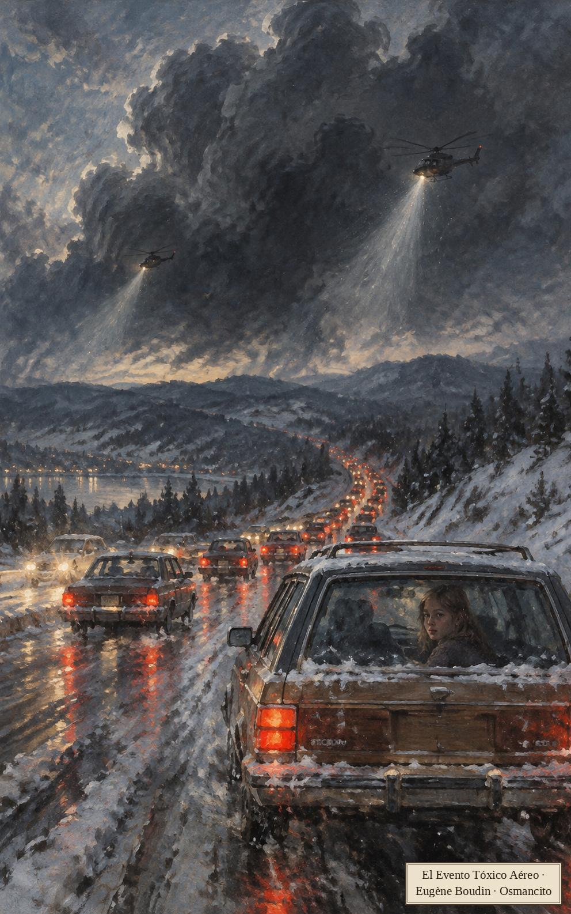
Jack vuelve a casa tras una noche de nieve y ve a Heinrich, de catorce años, en una cornisa junto a la ventana del ático, mirando con binoculares el humo de un descarrilamiento en los patios de trenes. Jack sube y le dice que no debe estar en cornisas heladas, que eso preocupa a Baba, el apodo de Babette. Heinrich responde:
«Crees que si me dices que a ella le preocupa, me sentiré culpable y no lo haré.»
Frase 2793
Jack lo manda a quitar la nieve de la entrada. Más tarde Heinrich vuelve al ático con una radio y un mapa: la radio habla de una columna plumosa, pero él ve una cosa negra y creciente, y dice que el químico se llama Nyodene D. Abajo, Steffie pregunta:
«¿Pero tendremos que dejar nuestras casas?»
Frase 2858
Jack dice que no. Denise entra y cuenta que usan sopladores de nieve para echar nieve sobre el derrame. Pregunta:
«¿Cuándo comemos?»
Frase 2873
Babette atiende el teléfono: es de los Stover, conocidos de la familia, que hablaron con el centro meteorológico. Ya no dicen «columna plumosa» sino «nube negra y ondulante», y se espera que una masa de aire baje de Canadá. Jack comenta que eso siempre pasa. Babette dice:
«Y como Canadá queda al norte, si la nube ondulante va derecho hacia el sur, nos pasará de largo con un margen cómodo.»
Frase 2896
«¿Cuándo comemos?», dije.
Frase 2897
Suenan sirenas antiaéreas. Babette saca cosas del refrigerador y dice que quizá deberían preocuparse más por la nube. Jack responde que estas cosas les pasan a los pobres, no a un profesor universitario. Dice:
«Vivimos en un pueblo ordenado y agradable, cerca de una universidad de nombre pintoresco.»
Frase 2915
Jack sube al ático, sale a la cornisa con los binoculares y ve el descarrilamiento: helicópteros, bomberos y hombres con trajes amarillos Mylex y máscaras, que llevan instrumentos para medir la muerte. Vuelve a entrar. Heinrich le pregunta si la nube vendrá hacia ellos y dice que por su voz sabe que Jack sabe algo. Jack dice:
«Quieres que diga que no vendrá hacia aquí ni en un millón de años.»
Frase 2979
Jack cuenta que la radio ya no la llama «nube negra y ondulante» sino «evento tóxico aéreo». Heinrich lo mira buscando que lo tranquilicen. Jack le contesta:
«Está allá, nosotros estamos aquí.»
Frase 2997
Heinrich dice que una gran masa de aire baja de Canadá. Jack responde que ya lo sabía. Jack cuenta:
Vimos a Wilder bajar de espaldas los escalones del ático, que eran más altos que los demás escalones de la casa.
Frase 3008
Wilder, el niño pequeño, baja del ático. Denise se levanta varias veces durante la cena con la mano en la boca. Jack cuenta:
Nos detuvimos, en medio de un bocado o de un salpimentar, para oír sus arcadas incompletas.
Frase 3010
Heinrich le dice a Denise que sus síntomas están pasados de moda. Denise nota que cenan antes de lo habitual. Pregunta:
«¿No estamos cenando un poco temprano esta noche?», dijo Denise.
Frase 3017
Babette pregunta qué es temprano. Denise mira a Steffie y dice:
«¿Es porque queremos quitárnoslo de encima?», dijo.
Frase 3020
Babette pregunta:
«¿Por qué queremos quitárnoslo de encima?»
Frase 3021
Steffie contesta que es por si pasa algo. Babette pregunta qué podría pasar y las niñas se miran otra vez. Jack cuenta:
Las sirenas antiaéreas volvieron a sonar, esta vez tan cerca de nosotros que nos afectaron de mala manera, sacudidos hasta el punto de evitar mirarnos a los ojos, como forma de negar que ocurría algo inusual.
Frase 3025
Seguimos comiendo, en silencio y con pulcritud, reduciendo el tamaño de los bocados, pidiendo con cortesía que nos pasaran las cosas.
Frase 3032
Nos volvimos meticulosos y parcos, redujimos el alcance de nuestros movimientos, untamos el pan como técnicos que restauran un fresco.
Frase 3033
Seguimos evitando el contacto visual y cuidamos de no hacer chocar los cubiertos.
Frase 3035
Creo que entre nosotros pasó la esperanza avergonzada de que solo así podríamos evitar que nos notaran.
Frase 3036
Era como si las sirenas anunciaran la presencia de algún mecanismo de control, algo que haríamos bien en no provocar con nuestra discusión y la comida derramada.
Frase 3037
No fue hasta que se hizo audible un segundo ruido en el pulso de las potentes sirenas que pensamos en hacer una pausa en nuestro pequeño episodio de histeria decorosa.
Frase 3038
Por primera vez en minutos nos miramos, sabiendo que el nuevo sonido era una voz amplificada pero sin saber qué decía.
Frase 3041
Heinrich sale a escuchar a la puerta y vuelve con paso rígido. Dice:
«Quieren que evacuemos», dijo, sin mirarnos a los ojos.
Frase 3044
Babette pregunta si solo era una sugerencia o algo más obligatorio. Heinrich cuenta que era el auto de un capitán de bomberos con altavoz, que gritaba que se evacuara y hablaba de una nube de sustancias mortales. Babette dice que hay tiempo de sobra, porque si no les habrían dicho que se apuraran. Jack cuenta:
Nos quedamos sentados ante el bizcocho y los duraznos en lata.
Frase 3052
Steffie lee un cupón llorando bajito, Denise sube a hacer maletas, Heinrich busca los binoculares y Babette junta latas y frascos. Jack cuenta:
Veinte minutos después estábamos en el auto.
Frase 3061
La radio indica rutas de salida según el extremo del pueblo. Jack cuenta:
Éramos de los rezagados del primer grupo y nos unimos al flujo de tráfico hacia la ruta principal de salida del pueblo, un sórdido corredor de autos usados, comida rápida, farmacias de descuento y cines cuádruples.
Frase 3064
Mientras esperábamos nuestro turno para entrar en la carretera de cuatro carriles, oímos la voz amplificada arriba y detrás de nosotros, llamando a casas a oscuras en una calle de sicomoros y setos altos.
Frase 3065
La voz repite sin parar: «Abandonen todos los domicilios. Evento tóxico, nube química». Jack cuenta:
Salimos a la carretera cuando empezaba a caer nieve.
Frase 3072
Teníamos poco que decirnos, con las mentes aún sin ajustarse a la realidad de las cosas, el hecho absurdo de la evacuación.
Frase 3073
Sobre todo mirábamos a la gente de otros autos, tratando de deducir por sus caras cuánto miedo debíamos tener.
Frase 3074
El tráfico avanzaba a paso de tortuga, pero pensábamos que el ritmo aumentaría unas millas más adelante, donde hay una abertura en la barrera divisoria que permitiría que nuestro flujo hacia el oeste usara los cuatro carriles.
Frase 3075
En una tienda de muebles hay gente bien iluminada que los mira por un ventanal. Jack cuenta:
Nos hacía sentir como tontos, como turistas que hacen todo mal.
Frase 3082
¿Por qué se contentaban con comprar muebles mientras nosotros, asustados, estábamos en un tráfico lento bajo una nevada?
Frase 3083
Sabían algo que nosotros no.
Frase 3084
Jack busca emisoras en la radio. Glassboro es un pueblo de la zona. Jack cuenta:
En una emisora de Glassboro supimos que había información nueva e importante.
Frase 3090
Nos quedamos adivinando lo que significaba.
Frase 3092
Una experta habla por la radio de las consecuencias: «Convulsiones, coma, aborto espontáneo». Babette y Jack se miran. Jack cuenta:
Ella empezó de inmediato a hablar con las niñas mientras yo bajaba el volumen para que no se enteraran de lo que podían imaginar que les esperaba.
Frase 3098
Pasamos junto a un motel de tres pisos.
Frase 3100
Cada ventana del motel está llena de gente que los mira. Jack cuenta:
Éramos un desfile de tontos, expuestos no solo a los efectos de la lluvia de residuos químicos sino al juicio desdeñoso de otras personas.
Frase 3102
Parecía imperativo llegar al campamento de los Boy Scouts, meternos a toda prisa en el edificio principal, sellar las puertas, apretujarnos en catres con nuestro jugo y nuestro café, esperar la señal de que había pasado el peligro.
Frase 3104
Los autos empiezan a subir por el talud de hierba al borde del camino. Jack cuenta:
Situados en lo que antes había sido el carril derecho, no teníamos más remedio que ver pasar a esos autos a una altura algo mayor y con un impulso garboso, desviados de la horizontal.
Frase 3106
Nos acercamos despacio a un paso elevado, viendo gente a pie allá arriba.
Frase 3107
Sobre el paso elevado cruza gente con cajas, maletas, bicicletas y trineos; una familia va envuelta en plástico. Jack cuenta:
Pasamos despacio bajo el paso elevado, oyendo una ráfaga de bocinas y el lamento suplicante de una ambulancia atascada en el tráfico.
Frase 3122
Cincuenta yardas más adelante el tráfico se estrechaba a un solo carril y pronto vimos por qué.
Frase 3123
Un auto resbaló por el talud y chocó con otro vehículo. Un helicóptero ilumina la masa; hay gente aturdida sobre la hierba y dos personas ensangrentadas. Jack cuenta:
Pasamos en silencio, sintiendo una curiosa reverencia, incluso exaltados por la visión de los autos amontonados y las personas caídas.
Frase 3133
Heinrich mira por la ventanilla trasera con los binoculares y describe con entusiasmo los cuerpos y los detalles del choque. Jack cuenta:
Yo creía que todos habíamos ocupado el mismo estado mental, apagados, preocupados, confundidos.
Frase 3138
Jack lo ve por el retrovisor, feliz entre el desastre, hablando de la nieve, del tráfico y de la gente que camina con esfuerzo. Jack cuenta:
Especulaba sobre qué tan lejos estábamos del campamento abandonado, qué clase de alojamientos primitivos podría haber allí.
Frase 3143
Debía de saber que todos podíamos morir.
Frase 3146
Los demás discuten dentro del auto. El Nyodene D. es el químico del derrame. Jack cuenta:
Por la radio supimos que enviaban a la zona perros adiestrados para olfatear el Nyodene D., desde un centro de detección química en una región remota de Nuevo México.
Frase 3176
Babette dice que a los perros no les pasa nada, porque solo afecta a humanos y ratas. Los niños discuten sobre ratas y cucarachas. Jack cuenta:
Llegamos al punto donde la barrera de concreto cede el paso a un tramo de veinte yardas de mediana ajardinada, no más alta que un bordillo.
Frase 3203
Los hombres de traje Mylex son como los que Jack vio desde la cornisa: trajes amarillos con máscara. Jack cuenta:
Pero en lugar de un policía estatal que dirigiera el tráfico hacia dos carriles extra, vimos a un hombre con traje Mylex que nos alejaba con gestos de la abertura.
Frase 3204
Más allá hay un montón de chatarra, una casa rodante sobre un quitanieves, y utensilios de plástico regados. Jack cuenta:
No había señales de víctimas ni de sangre fresca, lo que nos llevaba a creer que había pasado algún tiempo desde que la casa rodante se montó sobre el quitanieves, probablemente en un momento en que el oportunismo parecía una falla fácilmente defendible, dadas las circunstancias.
Frase 3208
Steffie dice que ya vio todo esto antes: el hombre del traje amarillo y la máscara, el gran choque en la nieve, todo exactamente igual. Dice:
«Estábamos todos aquí, en el auto.»
Frase 3217
Heinrich le había dicho a Jack que la exposición a los desechos químicos podía producir déjà vu. Steffie no estaba cuando lo dijo, pero pudo oírlo en la radio de la cocina. Jack cuenta:
No creía que Steffie supiera lo que significaba déjà vu, pero era posible que Babette se lo hubiera dicho.
Frase 3222
Jack se pregunta si hay un déjà vu verdadero y uno falso y si Steffie desarrolla síntomas reales por vías naturales. Apaga la radio. Heinrich dice que otra cosa ya pasó antes:
«Nos estamos quedando sin gasolina.»
Frase 3252
El indicador tiembla en la E. Babette dice que siempre hay gasolina extra, y Heinrich y ella discuten sobre el tanque. Heinrich pregunta cómo se sabe cuándo parar. Jack cuenta:
«Cuando pases una gasolinera», le dije, y allí estaba, una plaza desierta y barrida por la lluvia, con surtidores orgullosos bajo una hilera de banderines multicolores.
Frase 3262
Jack baja de un salto, corre a los surtidores, que no están cerrados con llave, y agarra la manguera. Jack cuenta:
Unos minutos después, de vuelta en la carretera, vimos un espectáculo notable y sorprendente.
Frase 3267
Apareció en el cielo delante de nosotros y a la izquierda, haciéndonos bajar en los asientos, inclinar la cabeza para ver mejor, exclamar unos a otros con frases a medias.
Frase 3268
Era la nube negra, el evento tóxico aéreo, iluminada por los helicópteros. En todos los autos la gente movía la cabeza y tocaba la bocina. Jack cuenta:
No supimos cómo reaccionar.
Frase 3273
Era terrible verla tan cerca y tan baja, pero también espectacular. Nuestro miedo se mezclaba con un asombro casi religioso. Jack cuenta:
Era una muerte fabricada en un laboratorio, definida y medible, pero entonces la pensamos de manera simple y primitiva, como una perversidad estacional de la tierra, igual que una inundación o un tornado, algo que no se puede controlar.
Frase 3278
Atrás los niños se pelean por los binoculares. Los helicópteros parecen iluminar la nube para nosotros. Jack cuenta:
Pero esto no era historia lo que presenciábamos.
Frase 3283
Los helicópteros lanzan bengalas. La carretera se aleja de la nube. Cerca del campamento de los Boy Scouts entran al camino dos autobuses escolares. Jack cuenta:
Reconocimos a los conductores, vimos caras familiares en las ventanillas, gente que solíamos ver sentada en sillas de jardín tras los escasos setos del asilo o caminando en círculos cada vez más estrechos, con velocidad cada vez mayor, como masas que giran en un aparato de giro.
Frase 3289
Sentimos un extraño afecto por ellos y un alivio de que los cuidaran de manera diligente y profesional.
Frase 3290
Pasamos junto a un cartel del granero más fotografiado de Estados Unidos.
Frase 3292
Tardan una hora en encauzar el tráfico hacia el acceso de un solo carril. Jack cuenta:
Hombres con traje Mylex agitaban linternas y colocaban conos fluorescentes, dirigiéndonos hacia el estacionamiento y hacia campos deportivos y otras zonas abiertas.
Frase 3294
Avanzamos a sacudidas por caminos de tierra, sobre surcos y montículos.
Frase 3296
Cerca de los edificios principales vimos a un grupo de hombres y mujeres con sujetapapeles y walkie-talkies, funcionarios sin traje Mylex, expertos en la nueva ciencia de la evacuación.
Frase 3297
La lluvia afloja y la gente apaga los faros. El largo y extraño viaje terminó. Jack cuenta:
Esperamos que nos llegara una sensación de satisfacción, algún aire de logro tranquilo, el cansancio bien ganado que promete un sueño quieto y profundo.
Frase 3302
Heinrich se come una barra de caramelo. Jack cuenta:
Oímos el ruido de sus dientes pegándose a la masa de caramelo y glucosa.
Frase 3305
Una familia de cinco baja de un Datsun con chalecos salvavidas y bengalas. Se forman grupos en torno a ciertos hombres, fuentes de información y de rumores. Jack cuenta:
Se decía que nos permitirían volver a casa a primera hora de la mañana; que el gobierno estaba encubriendo algo; que un helicóptero había entrado en la nube tóxica y nunca había reaparecido; que habían llegado los perros desde Nuevo México, lanzados en paracaídas sobre un prado en un audaz salto nocturno; que el pueblo de Farmington sería inhabitable durante cuarenta años.
Frase 3312
Al salir la gente de golpe de la realidad, quedamos liberados de la necesidad de distinguir.
Frase 3315
Estábamos en un gran barracón, uno de los tres edificios así del campamento, y con el generador ya funcionando estábamos bastante cómodos.
Frase 3317
La Cruz Roja repartió catres, calentadores portátiles, sándwiches y café, y hay lámparas de queroseno. Jack cuenta:
El lugar estaba atestado, aún bastante frío, pero la visión de enfermeras y voluntarios nos hizo sentir que los niños estaban a salvo, y la presencia de otras almas varadas, mujeres jóvenes con bebés, ancianos y enfermos, nos dio cierta firmeza y voluntad, una inclinación desinteresada tan marcada que servía de identidad común.
Frase 3321
Jack avanza entre la gente hasta el borde de un grupo grande y descubre que su hijo Heinrich, con binoculares al cuello, habla del evento tóxico de forma técnica, casi cantando de orgullo. La gente lo escucha con atención. Jack cuenta:
Lo oí decir: «Lo que rociaron sobre el gran derrame en el patio de trenes era probablemente ceniza de sosa.»
Frase 3335
Heinrich sigue hablando. Jack no quiere que lo vea ahí. Jack cuenta:
Así que me escabullí, pasando junto a un hombre con botas de nieve envueltas en plástico, y me dirigí al extremo más lejano del barracón, donde habíamos acampado antes.
Frase 3369
Estábamos junto a una familia negra de testigos de Jehová.
Frase 3370
Una mujer de la familia le dice a Babette que esto es algo, y ella responde que ya nada la sorprende. Babette revisa una bolsa de provisiones y dice:
«Estamos prácticamente al borde.»
Frase 3394
Más tarde Jack y Babette susurran. Jack le dice que Heinrich parece salir de su concha y que está allí en medio, contando a la gente lo que sabe. Babette susurra:
«¿Por qué no nos lo dijo?», susurró ella.
Frase 3443
Jack le dice que Heinrich debe de estar cansado de ellos. Después una mujer al frente del salón habla de la exposición a agentes tóxicos. Denise, con mirada dura, le dice a Jack que eso lo toca a él, que bajó del auto a cargar gasolina. Jack va al frente. Se forman dos filas por letras, de la A a la M y de la N a la Z, ante mesas plegables, con técnicos con credenciales. Jack cuenta:
Los gruesos chalecos naranjas no parecían especialmente fuera de lugar, aunque estábamos más o menos en tierra seca, muy por encima del nivel del mar, a muchas millas del cuerpo de agua amenazante más cercano.
Frase 3585
Un técnico de SIMUVAC, abreviatura de evacuación simulada, un programa estatal, teclea los datos de Jack y le habla de su perfil: el Nyodene D. dura treinta años en el cuerpo y «sabremos más en quince». Para Jack la muerte ha entrado. En el barracón hay ancianos ciegos, entre ellos el viejo Treadwell. Jack cuenta:
Cuando volví al otro extremo del barracón, los tres niños menores dormían, Heinrich hacía anotaciones en un mapa de carreteras y Babette estaba sentada a cierta distancia con el viejo Treadwell y varios otros ciegos.
Frase 3721
Babette lee a los ciegos titulares de tabloides de supermercado. Heinrich, despierto, dice que es como si los hubieran lanzado atrás en el tiempo, a la Edad de Piedra. Jack encuentra a Murray Jay Siskind hablando con unas prostitutas desde las ventanillas de un auto y habla con él del déjà vu y de la muerte. Una voz con megáfono ordena evacuar de nuevo: el evento tóxico se dirige hacia ellos. Todos se levantan; en la puerta, una mujer con brazalete reparte mascarillas quirúrgicas blancas. Jack cuenta:
Tomamos seis y salimos.
Frase 4154
Sigue oscuro y llueve fuerte. Hay desorden por todas partes: autos atascados en el barro, sirenas, gente que corre y carpas arrastradas por el viento. Jack cuenta:
Desde lo hondo del bosque oímos motocicletas acelerando, voces que lanzaban gritos incoherentes.
Frase 4161
Nos pusimos las máscaras y corrimos bajo el aguacero hasta nuestro auto.
Frase 4164
Un grupo de hombres, con pinta de instructores de guerra en la selva, sube a un Land-Rover y se mete en la maleza; su calcomanía dice EL CONTROL DE ARMAS ES CONTROL MENTAL. Jack cuenta:
No parecía que nos acercáramos a las luces.
Frase 4175
Babette encendió la radio y nos dijeron que los evacuados del campamento de los Boy Scouts debían dirigirse a Iron City, donde se preparaban comida y refugio.
Frase 4176
Entonces oímos los rotores.
Frase 4178
Entre los árboles pelados ven la inmensa nube tóxica, que parece generar sus propias tormentas; los helicópteros vibran como electrodomésticos gigantes. Jack cuenta:
Nos sentamos en el auto, en el bosque nevado, sin decir nada.
Frase 4184
Jack recuerda con horror la entrevista con el técnico de SIMUVAC: técnicamente está muerto. Empuja el auto entre los pinos. A través de su máscara, Heinrich pregunta si alguna vez miraron de verdad su propio ojo. Jack cuenta:
Denise dijo, mostrando un interés inmediato, como si holgazaneáramos un día de pleno verano en el porche.
Frase 4199
Hablan del ojo y de otras cosas mientras el auto cruza un arroyo y sale por fin del bosque. Jack cuenta:
Pasamos junto a familias a pie, vimos una fila de luces rojas en pares serpenteando en la oscuridad.
Frase 4238
Cuando salimos con dificultad del bosque, la gente de otros autos nos miró con ojos soñolientos.
Frase 4239
Tardamos noventa minutos en llegar a la autopista, otros treinta hasta el trébol, donde giramos hacia Iron City.
Frase 4240
El Palacio de Kung Fu es un restaurante de pagodas y estanques, otro de los centros de evacuación. Jack cuenta:
Fue aquí donde nos encontramos con el grupo del Palacio de Kung Fu.
Frase 4241
Los autos convergen como caravanas de carretas y la nube sigue en el retrovisor. Jack cuenta:
Llegamos a Iron City al amanecer.
Frase 4246
Hay controles en todas las salidas. Policías estatales y voluntarios de la Cruz Roja reparten instrucciones mimeografiadas. Jack cuenta:
Media hora después nos encontramos, con otras cuarenta familias, en un estudio de karate abandonado, en el último piso de un edificio de cuatro plantas de la calle principal.
Frase 4249
No hay camas ni sillas, y Steffie se niega a quitarse la máscara. Jack cuenta:
A las nueve de la mañana teníamos una provisión de colchones de aire, algo de comida y café.
Frase 4252
Por las ventanas polvorientas vimos a un grupo de escolares con turbante, miembros de la comunidad sij local, de pie en la calle con un cartel escrito a mano: IRON CITY DA LA BIENVENIDA A LOS EVACUADOS DE LA ZONA.
Frase 4253
No se nos permitía salir del edificio.
Frase 4254
Los evacuados hablan de microorganismos y del miedo. A las tres de la tarde Steffie sigue con la máscara y camina junto a las paredes, mirando a la gente como si no la vieran mirar. Jack cuenta:
Sabía que simplemente tendríamos que esperar a que ella olvidara la voz amplificada, las sirenas, el viaje nocturno por el bosque.
Frase 4294
Pasan los días en el estudio de karate. Jack cuenta:
Pasaron nueve días antes de que nos dijeran que podíamos volver a casa.
Frase 4349
Capítulo 22: El Supermercado y el Atardecer
Jack, Babette, Murray, Denise y Wilder.
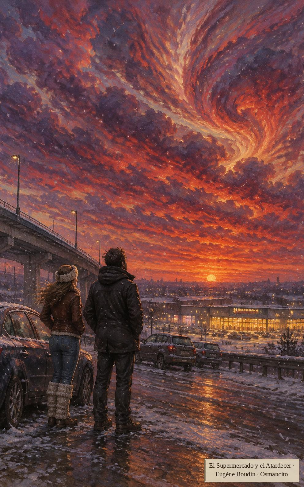
El supermercado está lleno de ancianos que parecen perdidos. Jack empuja el carro con Wilder sentado dentro. Se anuncia una gran nevada y los viejos compran con pánico, como acaparadores en una guerra. Jack cuenta:
Vi a Murray en la zona de alimentos genéricos, con una sartén de teflón.
Frase 4385
Murray anota en una libreta lo que le dice la gente. Le cuenta a Jack que su rival Cotsakis se perdió en el oleaje frente a Malibú. Hablan de lo enorme que era y de que ninguno lo conocía. Murray dice:
«Es extraño, en cierto modo, ¿no?», dijo, «que podamos imaginar a los muertos.»
Frase 4455
Jack lleva a Wilder por los puestos de fruta hacia la caja. Le gusta estar con él y envidia lo rápido que olvida. Piensa que el supermercado no cambia, salvo para mejor. Jack cuenta:
Temprano esa noche llevé a Babette en el auto a su clase de postura.
Frase 4473
Nos detuvimos en el paso elevado de la autopista y bajamos a mirar el atardecer.
Frase 4474
Desde el evento tóxico aéreo, los atardeceres son casi insoportablemente hermosos. Nadie ha podido probar que haya relación. Babette dice:
«¿En qué otra cosa podemos creer?», dijo Babette.
Frase 4478
«¿De qué otra manera podemos explicarlo?»
Frase 4479
Jack responde que no sabe. Babette sigue:
«No estamos al borde del océano ni del desierto.
Frase 4481
Deberíamos tener atardeceres invernales tímidos.
Frase 4482
Los atardeceres duraban cinco minutos y ahora duran una hora. En el paso elevado se juntan otros a mirar, y la policía no se atreve a hacer cumplir la prohibición de estacionar. Jack cuenta:
Más tarde volví en el auto a la iglesia congregacional a recogerla.
Frase 4495
Denise y Wilder lo acompañan. Babette sale de su clase y cuenta que quieren que dé otro curso, «Comer y beber: parámetros básicos». Dice que la gente necesita que alguien con autoridad le asegure cuál es la manera correcta de hacer las cosas. En la cama, Jack cuenta:
En la cama yacíamos callados, mi cabeza entre sus pechos, amortiguada como contra algún golpe implacable.
Frase 4528
Yo estaba decidido a no contarle el veredicto de la computadora.
Frase 4529
Sabía que se destrozaría al enterarse de que mi muerte casi seguro precedería a la suya.
Frase 4530
Cuanto más leve el roce, más decidido estaba yo a impedir que lo supiera.
Frase 4534
Una vez casi le pedí que se pusiera los calentadores de piernas antes de hacer el amor.
Frase 4536
Pero me pareció una petición más hondamente arraigada en el patetismo que en una sexualidad aberrante, y pensé que podría hacerla sospechar que algo andaba mal.
Frase 4537
Capítulo 23: La Radiación y los Teoremas
Jack, Heinrich y Babette.
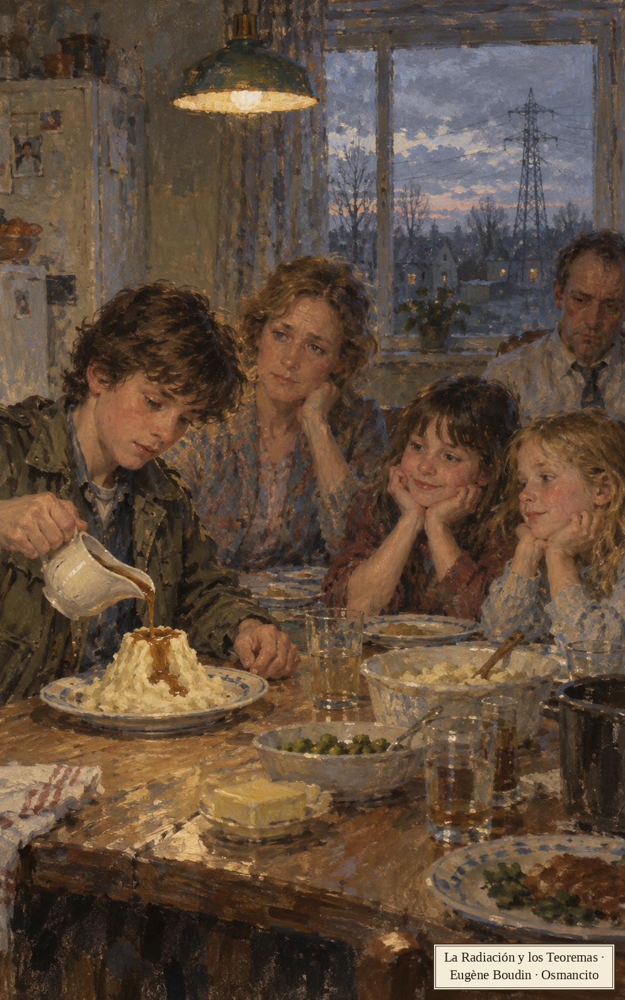
Jack le pide a Dunlop, su profesor de alemán, media hora más por lección. Dunlop apila muebles contra las ventanas. Jack domina el vocabulario, pero no logra pronunciar. Perros pastores alemanes patrullan el pueblo con hombres de traje Mylex. En la cena Denise pregunta por qué no se visten con ropa normal, y Babette dice que es lo que usan de servicio. Heinrich responde:
«Eso es lo que se supone que debemos creer», dijo Heinrich.
Frase 4562
Heinrich dice que publicar los resultados verdaderos traería demandas, pánico y desorden. Babette cree en los resultados publicados: un derrame diario no puede ser tan grave. Heinrich dice que esos derrames no son nada. Babette contesta:
«No diría que no son nada», dijo ella con cautela.
Frase 4586
Heinrich dice que el problema real es la radiación de cada día: radio, televisor, microondas, cables de alta tensión. Babette pregunta qué dicen ahora. Jack cuenta:
Lo vimos usar la cuchara para moldear el puré de su plato con forma de montaña volcánica.
Frase 4598
Heinrich habla de los campos eléctricos y magnéticos, y dice que los hallazgos científicos explican hasta los bebés deformes. Las niñas lo admiran. Jack cuenta:
Quería discutir con él.
Frase 4619
Quería preguntarle por qué debía creer esos hallazgos científicos y no los resultados que indicaban que estábamos a salvo de la contaminación por Nyodene.
Frase 4620
Quería decirle que la evidencia estadística como la que citaba era por naturaleza no concluyente y engañosa.
Frase 4622
Quería decir que aprendería a considerar con ecuanimidad todos esos hallazgos catastróficos a medida que madurara, saliera de su literalismo asfixiante, desarrollara un espíritu de indagación informada y escéptica, avanzara en sabiduría y juicio equilibrado, envejeciera, decayera, muriera.
Frase 4623
Jack solo dice que los datos aterradores ya son una industria. Heinrich cita un dato sobre ratas blancas. Babette se queja de que en la escuela ya no enseñan teoremas ni historia, y lanza preguntas. Jack responde:
«¿Fue el Monitor o el Merrimac el que se hundió?», dije.
Frase 4637
Capítulo 24: El Frasco de Dylar
Jack, Denise y Babette.
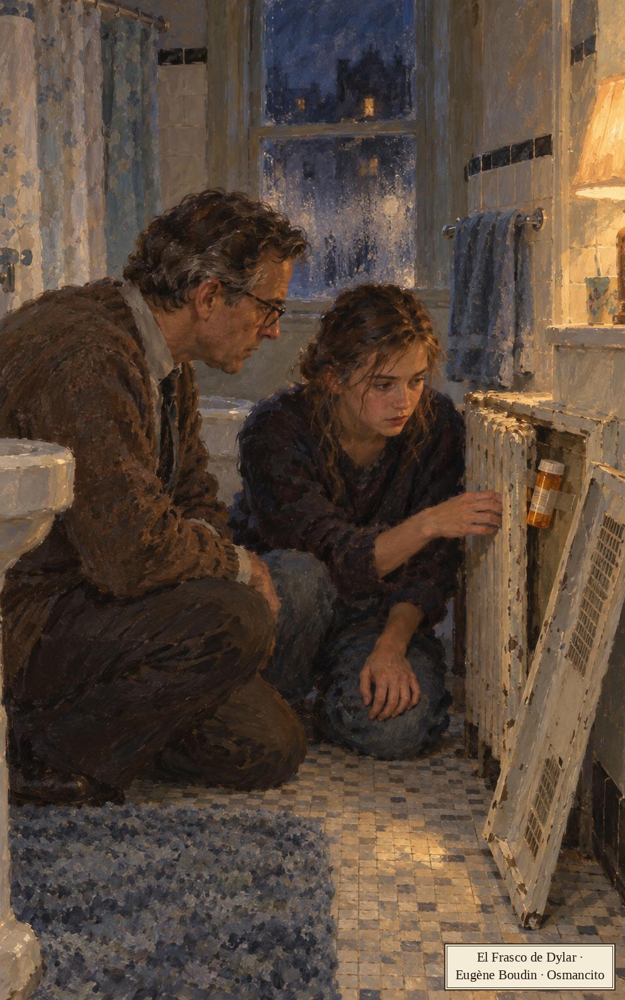
Jack encuentra un frasco ámbar de plástico, pegado con cinta bajo la tapa del radiador del baño. La cinta deja leer la palabra Dylar. Jack cuenta:
Fue la noche siguiente cuando descubrí el Dylar.
Frase 4667
Lo encontré cuando el radiador empezó a golpear y quité la tapa para estudiar la válvula con seriedad y método, tratando de disimular ante mí mismo la impotencia que sentía.
Frase 4670
Jack busca a Denise, que está en la cama viendo televisión. Miran el frasco juntos, sin tocarlo, y vuelven a su cuarto. Jack cuenta:
Denise se sentó en la cama, mirando más allá de mí, más allá del televisor, más allá de los pósters y los recuerdos.
Frase 4680
Baba es el apodo de Babette. Denise, con el ceño fruncido, dice:
«No le decimos nada a Baba.»
Frase 4682
Denise dice que Babette solo diría que no recuerda por qué lo puso ahí. Jack pregunta qué es el Dylar y dice:
«Un farmacéutico puede decirnos para qué sirve eso.»
Frase 4688
Denise ya fue a tres farmacias y nadie conocía el Dylar: no figura en ninguna lista. Jack dice:
«Tendremos que llamar a su médico.»
Frase 4704
Jack propone llamar al médico a su casa. Denise quiere que lo despierte. Dice:
«Engáñalo para que nos diga lo que queremos saber.»
Frase 4712
El único teléfono está en la cocina. Babette sigue en el cuarto planchando blusas. Jack marca el número del médico, que se llama Hookstratten. Jack cuenta:
Le dije quién era y que estaba preocupado por Babette.
Frase 4722
Dije que estaba bastante seguro de que el medicamento que él le había recetado era lo que causaba el problema.
Frase 4724
Hookstratten responde con ironía: nunca vio el Dylar ni se lo recetó a Babette. Jack cuenta:
Le di las gracias, colgué y llamé a mi propio médico a su casa.
Frase 4754
El médico de Jack dice que Dylar debe de ser una isla del golfo Pérsico. Jack le dice a Denise que hará analizar una tableta en el departamento de química. Jack cuenta:
Esperé a que me dijera que ya lo había hecho.
Frase 4759
Pero ella solo asintió con gravedad y yo seguí por el pasillo, deteniéndome en el cuarto de Heinrich para darle las buenas noches.
Frase 4760
Heinrich hace dominadas en el clóset con una barra de Mercator, un estudiante mayor que se entrena para sentarse en una jaula con serpientes venenosas. Más tarde Jack mira dormir a Steffie y a Wilder, y vuelve a la cama; Babette mira por la ventana.
Capítulo 25: Winnie Richards, la Brillante
Jack, Winnie y Babette.
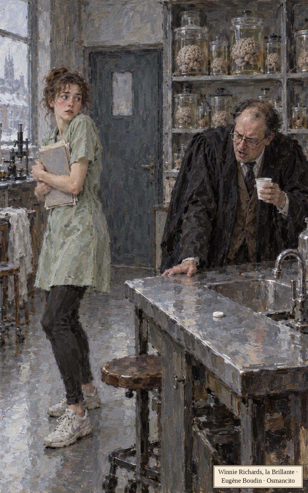
Un iraní entrega el diario desde un Nissan Sentra. Jack mira la tableta blanca. Jack cuenta:
Fui caminando hasta un pequeño edificio con cúpula, conocido como el Observatorio, y le di la tableta a Winnie Richards, una joven neuroquímica investigadora cuyo trabajo se decía que era brillante.
Frase 4841
Winnie es alta, huidiza, y se ruboriza con facilidad. Jack cuenta:
La vi sentarse en el escritorio atestado durante dos o tres minutos, haciendo girar despacio la tableta entre el pulgar y el índice.
Frase 4844
Winnie lame la tableta y se encoge de hombros. Jack le pregunta cuánto tardará el análisis. Ella dice:
«Tengo el cerebro de un delfín en mi bandeja de entrada, pero vuelve a verme dentro de cuarenta y ocho horas.»
Frase 4848
Nadie sabe cómo ni por qué se mueve sin que la vean. Jack cuenta:
De todos modos, me costó encontrarla durante el resto de esa semana.
Frase 4855
Winnie no aparece. Denise evita hablar del Dylar y Babette mira por las ventanas. Jack le cuenta a Babette lo del Dylar. Jack cuenta:
Esa tarde vi a Winnie Richards salir por una puerta lateral del Observatorio y bajar trotando, con zancadas largas, por un pequeño césped hacia los edificios nuevos.
Frase 4902
Jack sale tras Winnie, que va pegada a las paredes; la alcanza en un pasillo vacío y ella lo lleva a una sala con cerebros embotellados. Jack cuenta:
Me dio agua en un vaso de papel.
Frase 4919
Jack le pregunta si se esconde de él. Winnie dice que la gente se esconde aunque nadie la busque. La tableta se llama Dylar, dice Jack, y pide:
«¿Qué puedes decirme de eso?»
Frase 4935
Winnie explica que el agua atraviesa una membrana, disuelve la medicina y esta sale por un agujero. Dice:
«No soy experta en nada de esto, Jack, pero puedo decirte que es un sistema pequeño y maravilloso.»
Frase 4953
Jack pregunta qué pasa con la tableta después. Ella dice que implosiona sola y añade:
«Hemos entrado en el reino de la física.»
Frase 4966
Winnie dice que el plástico se reduce a partículas y sale del cuerpo. Jack responde:
«Ahora dime para qué está diseñado el medicamento.»
Frase 4969
Jack pregunta qué es el Dylar y cuáles son sus componentes. Winnie no lo sabe. Jack insiste en que es brillante. Ella aprieta unos archivos y dice:
«Jack, lo único que puedo decirte con certeza es que la sustancia contenida en el Dylar es algún tipo de psicofármaco.»
Frase 4996
Winnie habla del cerebro humano y dice que ignora qué es el medicamento, pero:
«Puedo decirte una cosa.»
Frase 5013
Winnie dice que no está en el mercado. Jack replica que lo encontró en un frasco de receta. Ella dice:
«No me importa dónde lo encontraste.»
Frase 5016
Winnie reconocería cualquier droga conocida, y esta no. Mira la puerta con miedo: se oyen pasos. Sale corriendo por atrás.
Capítulo 26: La Confesión de Babette
Babette, Jack y Mr. Gray.
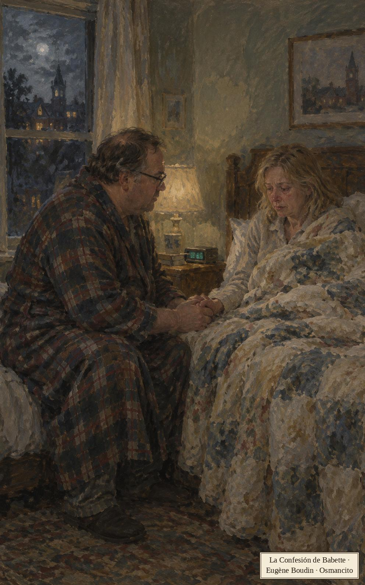
Jack apaga la radio del programa de llamadas y le dice a Babette que es hora de un diálogo serio. Jack dice:
«Tú lo sabes, yo lo sé.»
Frase 5042
Jack dice que ella le contará todo sobre el Dylar, aunque sea por Denise. Dice:
«Te hemos acorralado.»
Frase 5047
Jack cuenta que encontró el frasco escondido y mandó analizar una tableta. Jack exige:
«Solo dinos cuál es el problema de fondo.»
Frase 5058
«Como bien sabes, no tengo el temperamento para acosar a la gente.»
Frase 5059
Jack agrega que Denise es distinta y que él la ha estado conteniendo. Jack amenaza:
«Si no me cuentas lo que quiero saber, soltaré a tu niña.»
Frase 5062
Pasan cinco minutos. Babette pide contarlo a su manera. Jack responde:
«Tómate tu tiempo», dije.
Frase 5073
Babette dice que su condición empezó quizá hace año y medio, y le pide a Jack que la deje contar. Babette dice:
«Así es como puedo enseñar a mis alumnos a ponerse de pie, sentarse y caminar, aunque sé que tú piensas que esos temas son demasiado obvios, vagos y generales para reducirlos a sus partes.»
Frase 5103
Babette cuenta que quiso entender la condición dividiéndola en partes. Dice:
«Fui a bibliotecas y librerías, leí revistas y publicaciones técnicas, vi televisión por cable, hice listas y diagramas, hice gráficos multicolores, llamé por teléfono a redactores técnicos y a científicos, hablé con un santón sij en Iron City e incluso estudié lo oculto, escondiendo los libros en el desván para que tú y Denise no los encontraran ni se preguntaran qué pasaba.»
Frase 5111
Un día, mientras le leía un tabloide al señor Treadwell, Babette vio un anuncio de voluntarios para una investigación secreta y una empresa de psicobiología la entrevistó. Babette dice:
«Llamemos a la empresa Gray Research, aunque ese no es el nombre verdadero.»
Frase 5137
«Llamemos a mi contacto Mr. Gray.»
Frase 5138
Mr. Gray es un compuesto. Babette fue una de tres finalistas para probar una droga secreta, el Dylar, pero la empresa lo juzgó demasiado riesgoso. Babette dice:
«Si voy a contarte la historia, tengo que incluir este aspecto de ella, este sórdido rincón del corazón humano.»
Frase 5168
Babette y Mr. Gray hacen un trato privado: probarán el Dylar ellos solos, y ella le ofrece su cuerpo. Era una sola persona, el jefe del proyecto. Jack dice:
«De modo que ya no hablamos del Mr. Gray que es un compuesto.»
Frase 5194
Jack describe la escena del motel. Babette dice:
«Tú aprecias a la esposa que te lo cuenta todo.»
Frase 5223
Ella llora. Jack dice que hay gelatina que hizo Steffie, y ella dice que es una buena niña. Jack dice:
«Puedo traerte un poco sin problema.»
Frase 5238
Babette confiesa que le teme a la muerte. Jack sugiere que quizá sea su peso. Ella dice que ha perdido peso. Jack dice:
«Sé que has perdido peso.»
Frase 5315
Babette pregunta qué puede ser más profundo que la muerte. Jack cuenta:
Traté de convencerla de que no era tan grave como ella pensaba.
Frase 5322
Jack dice que es él quien siempre ha estado obsesionado con la muerte y que se lo ocultó para protegerla. Jack dice:
«Eso es lo que no puedo perdonarte.»
Frase 5355
Ambos confiesan cuánto temen morir. Jack le dice que ella es su fuerza. Jack dice:
«¿Cómo puedo convencerte de que esto es un error terrible?»
Frase 5415
Babette dice que a veces el miedo le llega como un golpe. Jack dice con gravedad que todas las tramas van en una sola dirección. Jack cuenta:
«¿Es por esto que me casé con Babette?»
Frase 5421
Nos abrazamos con fuerza durante largo rato, con los cuerpos apretados en un abrazo que incluía elementos de amor, dolor, ternura, sexo y lucha.
Frase 5424
Hacen el amor. Ella pide agua y van los dos al baño en bata y vuelven a la cama. Jack cuenta:
Ella se acurrucó enseguida para dormir, pero aún había cosas que yo quería saber, cosas que tenía que decir.
Frase 5442
Babette dice que en Gray Research aislaron la zona del cerebro donde vive el miedo a la muerte. Jack dice que las teorías de Heinrich son ciertas. Jack dice:
¿Me estás diciendo que toda una tradición de debilidades humanas ha llegado a su fin, que cobardía, sadismo y abuso son términos sin sentido?
Frase 5462
Babette dice que el Dylar no funciona. Mr. Gray le dio sesenta tabletas en dos frascos. Denise encontró el primero y Jack el segundo. Jack dice:
«Te pregunto cuántas tabletas has tomado.»
Frase 5499
Ella ha tomado cincuenta y cinco tabletas y cree que quedan cinco. Jack dice que quedan cuatro: mandó analizar una. Ella pregunta:
«¿Te lo dije?»
Frase 5505
Ella dice que al principio hubo mejoría, y que ahora no. Jack le recuerda una cena en casa de Murray, cuando dijo no recordar si tomaba medicación. Jack dice:
«Denise y yo supusimos que tu falta de memoria era un efecto secundario de la droga que estabas tomando.»
Frase 5521
Babette dice que el olvido fue un efecto de la condición, no de la droga. Mr. Gray le envió una cinta con sus disculpas. Ella apaga la lámpara y la radio. Jack dice:
«Hay algo que me prometí que no te diría.»
Frase 5549
Jack dice que está tentativamente programado para morir y le cuenta su exposición al Nyodene D. Jack cuenta:
Le conté lo del técnico de computadoras, cómo había accedido a mi historial para producir un enorme cómputo pesimista.
Frase 5555
Somos la suma total de nuestros datos, le dije, igual que somos la suma total de nuestros impulsos químicos.
Frase 5556
Jack dice que este es el secreto duro y pesado. Babette se sube encima de él, sollozando. Jack cuenta:
Me golpeó el pecho, me agarró la mano izquierda y me mordió la carne entre el pulgar y el índice.
Frase 5565
Me tomó la cabeza entre las manos, con suavidad y a la vez con furia, y la meció de un lado a otro sobre la almohada, un acto que no pude conectar con nada que ella hubiera hecho jamás, con nada que ella pareciera ser.
Frase 5567
Después ella se duerme inquieta. La radio se enciende. Jack va al baño, se lava, mueve el radiador y mete la mano detrás. El frasco de Dylar ya no está.
Capítulo 27: El Simulacro
Jack, Steffie, Orest y Babette.
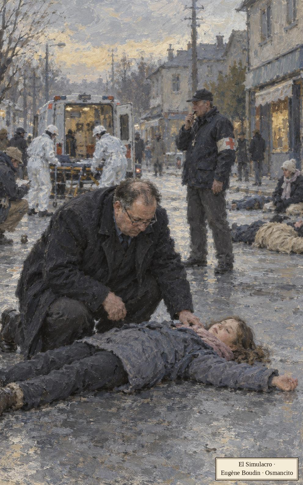
Jack vuelve a casa por Elm y encuentra la calle cerrada por un simulacro. Un hombre con brazalete SIMUVAC le ordena retroceder. Jack pregunta qué significa estar en la franja de exposición. El hombre responde:
«Significa que está muerto», me dijo.
Frase 5601
Jack deja el auto, vuelve a pie y entre las víctimas voluntarias ve tendida a su hija Steffie. Ella abre los ojos y dice:
«No se supone que estés aquí a menos que seas una víctima», dijo ella.
Frase 5619
Jack dice:
«Solo quiero asegurarme de que estás bien.»
Frase 5620
Steffie dice:
«Me meteré en problemas si te ven.»
Frase 5621
Steffie cierra los ojos. Jack cuenta:
Le hablé un rato más, pero no quiso contestar.
Frase 5628
Heinrich es capitán de calle y presenta a Orest Mercator, que quiere sentarse sesenta y siete días en una jaula con serpientes mortales. Jack pregunta:
«¿Puedes decirme por qué?»
Frase 5700
Jack le pregunta si entiende que arriesga la muerte por un par de líneas en un libro. Jack insiste:
«Te van a morder», continué.
Frase 5713
Orest insiste en que a él no lo morderán. Jack cuenta:
Me oí decir: «Sí te morderán, sí te morderán.»
Frase 5727
Jack se sorprende al ver cómo lo mira Orest. Jack cuenta:
Me sorprendió verlo mirarme con cierto interés, cierto respeto a regañadientes.
Frase 5732
Jack no sabe de dónde es Orest. Orest le hace preguntas. Jack cuenta:
Me dijo: «¿Cuántas libras puedes levantar en el press de banca?»
Frase 5748
Dentro, Babette le da de comer a Wilder y dice que estar con él la anima. Jack dice:
«Sé a qué te refieres.»
Frase 5768
Jack dice que le molesta que los otros niños dejen escapar los momentos especiales. Babette dice que hay algo más grande en Wilder que no logra nombrar. Jack responde:
«Recuérdame preguntarle a Murray», dije.
Frase 5778
Jack pregunta dónde están las cuatro tabletas que quedan. Babette pregunta:
«¿Me estás diciendo que no están detrás de la tapa del radiador?»
Frase 5790
Jack dice que las quiere por exactitud histórica. Babette le advierte:
«No te han hecho pruebas previas», dijo ella.
Frase 5797
Jack pregunta por Mr. Gray. Babette prometió no revelar su identidad. Babette dice:
Considerando lo que buscas, esa promesa vale el doble.
Frase 5809
Babette dice que no lo dirá, y que es más por el bien de Jack que por el de él. Babette propone:
Retomemos nuestras vidas, sin más.
Frase 5812
Digámonos que haremos lo mejor que podamos.
Frase 5813
Jack recoge a Denise en la escuela. Jack cuenta:
Era la primera vez que la recogía en la escuela, y al pasar frente al auto me lanzó una mirada recelosa y dura, una mirada que indicaba que no estaba de humor para noticias de una separación o un divorcio.
Frase 5820
Jack le dice que el Dylar mejora la memoria de Babette. Denise dice que no le cree:
«Porque no vendrías a buscarme a la escuela solo para decirme eso.»
Frase 5829
Denise pregunta si su madre es una adicta. Jack dice:
«Nos gustaría saber qué hiciste con el frasco.»
Frase 5838
Denise pregunta:
«¿Cómo sabes que me las llevé?»
Frase 5840
Jack responde:
Yo lo sé, tú lo sabes.
Frase 5841
Denise dice:
«Si alguien quiere decirme qué es realmente el Dylar, quizá lleguemos a algo.»
Frase 5842
Denise no cede. Jack cuenta:
Incluso recluté a Babette, convenciéndola de que el frasco debía estar en manos de adultos.
Frase 5850
Mantendría el objeto escondido hasta que le contáramos su secreto.
Frase 5853
Capítulo 28: El Almuerzo de los Neoyorquinos
Jack, Steffie, Grappa y Murray.
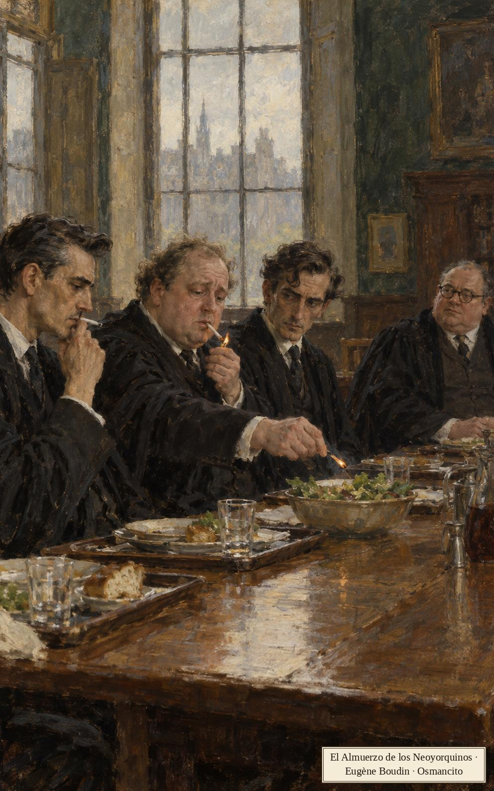
En la cocina, Wilder mira hervir el agua y Steffie cuenta que a la evacuación no se presentó mucha gente. Jack responde:
«Se presentan para las de verdad», dije.
Frase 5876
Steffie dice que su madre quiere que la visite en Pascua. Jack le dice:
«Te llevaré al aeropuerto.»
Frase 5888
Jack cuenta:
Mirábamos hervir el agua.
Frase 5894
Steffie dice que se anotó de nuevo como víctima, esta vez por un olor raro. Jack dice:
«Estoy seguro de que no les importará disculparte solo por esta vez.»
Frase 5905
Jack cuenta que su primer y su cuarto matrimonio fueron con Dana Breedlove, la madre de Steffie. Jack cuenta:
El primer matrimonio funcionó lo bastante bien como para animarnos a intentarlo otra vez en cuanto fue conveniente para ambos.
Frase 5908
Cuando lo hicimos, después de las melancólicas épocas de Janet Savory y Tweedy Browner, las cosas empezaron a desmoronarse.
Frase 5909
Dana trabaja a medias como espía. Jack cuenta:
Me contó muy poco de su trabajo de inteligencia.
Frase 5912
Yo sabía que reseñaba ficción para la CIA, sobre todo novelas largas y serias con estructuras cifradas.
Frase 5913
Jack se cruza con Babette. Jack cuenta:
«¿Cómo te sientes?» Hacer la pregunta y oírla nos hacía sentir mejor a los dos.
Frase 5931
Más tarde, en el almuerzo de Centenary Hall, Jack observa a Murray. Jack cuenta:
En el comedor de Centenary Hall, vi a Murray olfatear sus cubiertos.
Frase 5934
En la mesa, Lasher le pregunta a Grappa cuál fue la mayor influencia de su vida. Grappa dice que fue Richard Widmark en El beso de la muerte, por su risa sádica. Grappa dice:
Me sacó de algunos períodos emocionales difíciles.
Frase 5951
Grappa dice:
«Me ayudó a convertirme en una persona.»
Frase 5957
Lasher le hace preguntas raras a Grappa. Lasher pregunta:
«Cuando te arrancas la piel muerta del pulgar con los dientes, ¿te la comes o la escupes?»
Frase 5972
Grappa responde:
«Mastícala un momento y luego lánzala con rapidez desde la punta de la lengua.»
Frase 5973
Jack cuenta:
Lo vi encender un cigarrillo, sacudir el fósforo y tirarlo a la ensalada de Murray.
Frase 5984
Lasher le pregunta cuánto placer sentía de niño al imaginarse muerto. Grappa responde:
«Todavía lo hago todo el tiempo.»
Frase 5987
Grappa dice que imaginarse muerto es una forma infantil de autocompasión. Grappa concluye:
«Es mi manera de castigar a la gente por pensar que sus propias vidas son más importantes que la mía.»
Frase 5999
Jack no quiere oír eso. Alfonse Stompanato empieza a mover los hombros. Jack cuenta:
Lo tomé como una señal de que se estaba preparando para hablar.
Frase 6011
Jack sale a esperar a Murray y camina con él. Jack cuenta:
Cuando salió, lo sostuve del brazo, justo encima del codo, y caminamos por el campus como un par de ancianos europeos, con las cabezas inclinadas en conversación.
Frase 6027
Jack le pregunta a Murray por esa conversación. Jack dice:
«¿Cómo soportas escuchar eso?», dije.
Frase 6028
Siguen caminando. Jack cuenta:
Caminamos junto a pequeños montones de nieve derretida.
Frase 6040
Los Originales
Esta sección reúne, en el idioma del libro y por orden de aparición, las frases que arriba van en castellano. El número de cada una lleva de vuelta a su lugar.
Capítulo 1: Las Camionetas
Frase 5I've witnessed this spectacle every September for twenty-one years.
Frase 21There is an expressway beyond the backyard now, well below us, and at night as we settle into our brass bed the sparse traffic washes past, a remote and steady murmur around our sleep, as of dead souls babbling at the edge of a dream.
Frase 23I invented Hitler studies in North America in March of 1968.
Frase 25When I suggested to the chancellor that we might build a whole department around Hitler's life and work, he was quick to see the possibilities.
Capítulo 2: Babette en la Cocina
Frase 79Denise and Steffie came downstairs and we talked about the school supplies they would need.
Frase 81We entered a period of chaos and noise.
Frase 82We milled about, bickered a little, dropped utensils.
Frase 83Finally we were all satisfied with what we'd been able to snatch from the cupboards and refrigerator or swipe from each other and we began quietly plastering mustard or mayonnaise on our brightly colored food.
Frase 90"Where have we heard that before?" Denise said.
Frase 112The smoke alarm went off in the hallway upstairs, either to 'et us know the battery had just died or because the house was on fire.
Frase 113We finished our lunch in silence.
Capítulo 3: El Granero Fotografiado
Frase 131An exception to some of the above is Murray Jay Siskind, an ex-sportswriter who asked me to have lunch with him in the dining room, where the institutional odor of vaguely defined food aroused in me an obscure and gloomy memory.
Frase 205Several days later Murray asked me about a tourist attraction known as the most photographed barn in America.
Frase 211We counted five signs before we reached the site.
Frase 213We walked along a cowpath to the slightly elevated spot set aside for viewing and photographing.
Frase 216We stood near a grove of trees and watched the photographers.
Frase 223"We're not here to capture an image, we're here to maintain one.
Frase 229"Being here is a kind of spiritual surrender.
Frase 230We see only what the others see.
Frase 232We've agreed to be part of a collective perception.
Frase 241We can't answer these questions because we've read the. signs, seen the people snapping the pictures.
Frase 242We can't get outside the aura.
Frase 243We're part of the aura.
Frase 244We're here, we're now."
Capítulo 4: ¿Quién Morirá Primero?
Frase 259Her face was tilted up, catching the cool air, and she didn't see me.
Frase 266After the last descent I met her at the edge of the playing field and embraced her, putting my hands inside the sweatband of her gray cotton pants.
Frase 276She plans ski trips that we never take, her face bright with excitement.
Frase 288It cures us of our innocence of the future.
Frase 290We watched the girls come round again.
Frase 294We can put her in with Steffie."
Frase 308That night, a Friday, we ordered Chinese food and watched television together, the six of us.
Frase 320On one such night I got into bed next to Babette and told her how the chancellor had advised me, back in 1968, to do something about my name and appearance if I wanted to be taken seriously as a Hitler innovator.
Capítulo 5: Envases Blancos
Frase 411The three of us left together, trying to maneuver our shopping carts between the paperback books scattered across the entrance.
Frase 412Murray wheeled one of our carts into the parking lot and then helped us heave and push all our double-bagged merchandise into the back of the station wagon.
Frase 415We added Murray's single lightweight bag of white items to our load and headed across Elm in the direction of his rooming house.
Frase 418"I'd ask you to visit my room but it's too small for two people unless they're prepared to be intimate."
Frase 428We watched him walk toward the lopsided porch, propped with cinder blocks, where a man in a rocker stared into space.
Capítulo 6: ¿Llueve o No?
Frase 433Have I raised him, unwittingly, in the vicinity of a chemical dump site, in the path of air currents that carry industrial wastes capable of producing scalp degeneration, glorious sunsets?
Frase 442I drove him to school on his first day back after a sore throat and fever.
Frase 447"I'm only telling you what they said."
Frase 475Maybe if these people could see us through a telescope we might look like we were two feet two inches tall and it might be raining yesterday instead of today."
Frase 495"If you want to talk about this precise locality while you're in a vehicle that's obviously moving, then I think that's the trouble with this discussion."
Frase 512How do I know that what you call rain is really rain?
Frase 520"First-rate," I told him.
Frase 530I watched him walk through the downpour to the school entrance.
Frase 532At such moments I find I love him with an animal desperation, a need to take him under my coat and crush him to my chest, keep him there, protect him.
Frase 536We watch him at his desk, an unpainted table covered with books and magazines.
Capítulo 7: Quién Complace a Quién
Frase 612"I thought you liked it too."
Frase 617"If it pleases you, then I like to do it."
Frase 620"It pleases me that you enjoy my reading."
Frase 640Don't we want a balance, a sort of give-and-take?
Frase 646"But I don't want you to choose anything that has men inside women, quote-quote, or men entering women. 'I entered her.' 'He entered me.' We're not lobbies or elevators. 'I wanted him inside me,' as if he could crawl completely in, sign the register, sleep, eat, so forth.
Frase 669In these night recitations we create a space between things as we felt them at the time and as we speak them now.
Frase 672I put on my bathrobe and went down the hall to Heinrich's room to find a trashy magazine Babette might read from, the type that features letters from readers detailing their sexual experiences.
Capítulo 8: Lecciones de Alemán
Frase 706I contacted a man not affiliated with the college, someone Murray Jay Siskind had told me about.
Frase 712He said he was a former chiropractor but didn't offer a reason why he was no longer active and didn't say when he'd learned German, or why, and something in his manner kept me from asking.
Frase 724He was only demonstrating certain basic pronunciation patterns but the transformation in his face and voice made me think he was making a passage between levels of being.
Frase 731We stopped on the porch long enough for Murray to tell the landlord, who was sitting there, about a dripping faucet in the second-floor bathroom.
Frase 732The landlord was a large florid man of such robust and bursting health that he seemed to be having a heart attack even as we looked on.
Frase 733"He'll get around to fixing it," Murray said, as we set out on foot in the direction of Elm.
Capítulo 9: La Invitación de Murray
Frase 784The two girls and Babette, Wilder and I went to the supermarket.
Frase 785Minutes after we entered, we ran into Murray.
Frase 791We moved together into the ultra-cool interior.
Frase 792Wilder sat in the shopping cart trying to grab items off the shelves as we went by.
Frase 802We moved into the generic food area and Murray paused with his plastic basket to probe among the white cartons and jars.
Frase 841I heard Babette tell Murray she'd been wearing it fourteen hours a day for three weeks now.
Frase 909The three adults each stood at the head of an aisle and peered into the traffic of carts and gliding bodies.
Frase 910Then we did three more aisles, heads set forward, weaving slightly as we changed our sightlines.
Frase 921Before Murray went to the express line he invited us to dinner, a week from Saturday.
Frase 922"You don't have to let me know till the last minute."
Frase 926If you don't show up, I'll know that something came up and you couldn't let me know."
Frase 932I don't want you to feel I'm holding you to something.
Frase 935I have to eat anyway, so there's no major catastrophe if something comes up and you have to cancel.
Frase 936I just want you to know I'll be there if you decide to drop by, with or without kids.
Frase 937We have till next May or June to do this thing so there's no special mystique about a week from Saturday."
Capítulo 10: El Chicle y el Preso
Frase 963"You wanted me to chew sugarless gum, Denise.
Frase 966They put a warning, which I would have a hard time believing you didn't see."
Frase 977She gave me a look that wondered how the girl could talk on the phone and listen to us at the same time.
Frase 978I wanted to say because she finds us interesting.
Frase 980If you want me to start smoking again, take away my chewing gum and my Mentho-Lyptus."
Frase 1004"We don't want them," Babette said.
Frase 1033Then I put him on the counter and went upstairs to find Heinrich.
Frase 1038I think I got him cornered."
Frase 1045What do you know about him except that he's in jail for life, for murder?
Frase 1048"We send notes sometimes."
Frase 1080Had he been hearing voices?"
Frase 1082"Had he been hearing voices?"
Frase 1084"Talking just to him?
Frase 1085Singling him out?"
Frase 1086"Telling him to go down in history.
Frase 1095"He would select more carefully, kill one famous person, get noticed, make it stick."
Frase 1101"All right, he's told you all these things in the letters he sends.
Frase 1107"I know what you would say.
Capítulo 11: El Cuarto de Murray
Frase 1149Babette murmured in her sleep and I moved close, breathing her heat.
Frase 1161I thought she was still in bed.
Frase 1175"We're not supposed to talk about that.
Frase 1214"How does it feel being nearly fifty-one?" she said.
Frase 1217That night, in Murray's off-white room, after a spectacular meal of Cornish hen in the shape of a frog, prepared on a two-burner hot plate, we moved from our metal folding chairs to the bunk bed for coffee.
Frase 1220"You've done wonders," Babette said, her gaze sweeping desperately across the room.
Frase 1231"I'm sorry you didn't bring the kids.
Frase 1241Because we were seated on the bed, Murray had to lean well forward, looking past the coffee cup poised in my hand, in order to address Babette.
Frase 1252"TV is a problem only if you've forgotten how to look and listen," Murray said.
Frase 1262A great and humbling experience, let me tell you.
Frase 1284"How do you know so much?" Babette said.
Frase 1288"Have you ever been married?" she said.
Frase 1292Don't think I wouldn't appreciate a dramatic visit between two and three in the morning," he told her, "from an intelligent woman in spike heels and a slit skirt, with high-impact accessories."
Frase 1293It was drizzling as we walked home, my arm around her waist.
Frase 1325"I wanted to ask you before I asked her."
Frase 1329"We can't rule it out."
Capítulo 12: Dunlop y el Clima
Frase 1352When it was time for me to repeat the noises I did likewise, if only to please the teacher, twisting my mouth, shutting my eyes completely, conscious of an overarticulation so tortured it must have sounded like a sudden bending of the natural law, a stone or tree struggling to speak.
Frase 1376"Do you teach anything else?" I said.
Frase 1413He said he was driving through town on his way to Glassboro to make a presentation and thought he'd take us all to dinner.
Frase 1438Let's sneak up on some ribs, why don't we?
Frase 1472I realized Babette was looking at him carefully, trying to grasp the meaning of the four careening years they'd spent as man and wife.
Frase 1477Now she watched him with a tender sympathy, a reflectiveness that seemed deep and fond and generous enough to contain all the magical coun-terspells to his current run of woe, although I knew, of course, as I went back to my book, that it was only a passing affection, one of those kindnesses no one understands.
Capítulo 13: La Vidente de la Policía
Frase 1488She said Heinrich had been down at the river, wearing his camouflage cap and carrying an Instamatic, to watch them drag for the bodies, and while he was there word came that the Treadwells had been found alive but shaken in an abandoned cookie shack at the Mid-Village Mall, a vast shopping center out on the interstate.
Frase 1496Possibly their grandniece had dropped them off in her car and then forgotten to pick them up.
Capítulo 14: El Desvanecimiento Cerebral
Frase 1509We crowded before the window in Steffie's small room, watching the spectacular sunset.
Frase 1517"What are we going to do about Baba?" she said.
Frase 1539Do you want me to double-check the book?"
Frase 1541I looked" "We could always call her doctor.
Frase 1559But now she shifted position, used an elbow to prop her upper body and watched me speculatively from the foot of the bed.
Frase 1560"Can I ask you something?"
Frase 1583She kept watching me.
Frase 1585"Do you think I miscalculated?"
Frase 1607She climbed up on the bed and all three of us went through my German-English dictionary, looking for words that sound about the same in both languages, like orgy and shoe.
Frase 1617We had two closet doors that opened by themselves.
Frase 1618That night, a Friday, we gathered in front of the set, as was the custom and the rule, with take-out Chinese.
Frase 1620We'd never before been so attentive to our duty, our Friday assembly.
Frase 1625We were otherwise silent, watching houses slide into the ocean, whole villages crackle and ignite in a mass of advancing lava.
Frase 1626Every disaster made us wish for more, for something bigger, grander, more sweeping.
Frase 1641He'd once told me that the art of getting ahead in New York was based on learning how to express dissatisfaction in an interesting way.
Frase 1650I said to him, "Why is it, Alfonse, that decent, well-meaning and responsible people find themselves intrigued by catastrophe when they see it on television?"
Frase 1651I told him about the recent evening of lava, mud and raging water that the children and I had found so entertaining.
Frase 1702Grappa said to him, "Did you ever brush your teeth with your finger?"
Frase 1781I watched Grappa throw a cracker at Murray.
Capítulo 15: La Madre y la Multitud
Frase 1800"Hitler adored his mother," I said.
Frase 1804"Elvis and Gladys liked to nuzzle and pet," he said.
Frase 1805"They slept in the same bed until he began to approach physical maturity.
Frase 1806They talked baby talk to each other all the time."
Frase 1812She defended him in little street rumbles, lashed out at any kid who tried to bully him."
Frase 1820He brought his girlfriends around to meet her."
Frase 1831"Elvis could hardly bear to let Gladys out of his sight when her condition grew worse.
Frase 1837He talked baby talk to her until she was in the ground."
Frase 1865Did he think of the small groups of tourists who visited the little settlement where his mother was born and where he'd spent summers with his cousins, riding in ox carts and making kites?
Frase 1872Crowds came to his mountain villa, so many people he had to stay indoors.
Frase 1874Crowds came to hear him speak, crowds erotically charged, the masses he once called his only bride.
Capítulo 16: El Llanto de Wilder
Frase 1909At six he was still crying, sitting on the kitchen floor and looking through the oven window, and we ate dinner quickly, moving around him or stepping over him to reach the stove and refrigerator.
Frase 1918"We'll take him to the doctor," I said.
Frase 1928But once we decided to visit the doctor, we began to hurry, to fret.
Frase 1929We looked for Wilder's jacket and shoes, tried to remember what he'd eaten in the last twenty-four hours, anticipated questions the doctor would ask and rehearsed our answers carefully.
Frase 1933I waited in the car while Babette and Wilder went into the medical building at the end of Elm.
Frase 1939The boy walked next to his mother, holding her hand, still crying, and they seemed a picture of such amateurish sadness and calamity that I nearly started laughing—laughing not at the sadness but at the picture they made of it, at the disparity between their grief and its appearances.
Frase 1948He said, 'Well, why didn't you do it?'"
Frase 1969Let's take him to the hospital, to the emergency entrance.
Frase 2023We were halfway home when the crying stopped.
Capítulo 17: La Cuna de la Desinformación
Frase 2044All six of us were jammed into the car on our way to the Mid-Village Mall and Denise simply waited for a natural break in the conversation, directing her question toward the back of Babette's head, in a voice drained of inference.
Frase 2134I found the others and we walked across two parking lots to the main structure in the Mid-Village Mall, a ten-story building arranged around a center court of waterfalls, promenades and gardens.
Frase 2135Babette and the kids followed me into the elevator, into the shops set along the tiers, through the emporiums and department stores, puzzled but excited by my desire to buy.
Frase 2136When I could not decide between two shirt" they encouraged me to buy both.
Frase 2137When I said I was hungry, they fed me pretzels, beer, souvlaki.
Frase 2142We smelled chocolate, popcorn, cologne; we smelled rugs and furs, hanging salamis and deathly vinyl.
Frase 2145They gave me advice, badgered clerks on my behalf.
Frase 2147We moved from store to store, rejecting not only items in certain departments, not only entire departments but whole stores, mammoth corporations that did not strike our fancy for one reason or another.
Frase 2171We ate another meal.
Capítulo 18: Tweedy y el Aterrizaje Forzoso
Frase 2191For a moment I thought Bee was dead and Tweedy had come to tell me in person.
Frase 2204"Do you still love me, Tuck?" she said.
Frase 2205She called me Tuck, which is what her mother used to call her father.
Frase 2222Let's get out of here, Tuck, before children come swarming around to beg."
Frase 2231We got Tweedy's luggage, went out to the car and drove through Iron City, past deserted factories, on mainly deserted avenues, a city of hills, occasional cobbled streets, fine old homes here and there, holiday wreaths in the windows.
Frase 2234"I thought you'd love me forever, frankly.
Frase 2237"We get a divorce, you take all my money, you marry a well-to-do, well-connected, welltailored diplomat who secretly runs agents in and out of sensitive and inaccessible areas."
Frase 2239We were traveling parallel to railroad tracks.
Frase 2252I've never known you to be bitter, Tuck."
Frase 2266She wanted to incorporate us.
Frase 2275"Isn't there somewhere we can get a civilized meal?" Tweedy said.
Frase 2280We drove through a warehouse district, more deserted streets, a bleakness and anonymity that registered in the mind as a ghostly longing for something that was far beyond retrieval.
Frase 2283"God, Tuck, we were good together."
Frase 2311"We may as well go back to the airport."
Frase 2319We loved each other, didn't we?
Frase 2320We told each other everything, within the limits of one's preoccupation with breeding and tact.
Frase 2324She sat with her legs tucked under her, facing me, and flicked ashes into her shoes, which sat on the rubber mat.
Frase 2329At the airport we waited in a mist of plaster dust, among exposed wires, mounds of rubble.
Frase 2409We found Tweedy and headed out to the car.
Frase 2410There was a traffic jam on the outskirts of the city and we had to sit on a road outside an abandoned foundry.
Frase 2414Now we sat waiting in the dark for a car to get towed or a drawbridge to close.
Capítulo 19: Bee, la Testigo Silenciosa
Frase 2435Bee made us feel self-conscious at times, a punishment that visitors will unintentionally inflict on their complacent hosts.
Frase 2440If Denise was a pint-sized commissar, nagging us to higher conscience, then Bee was a silent witness, calling the very meaning of our lives into question.
Frase 2445She was self-possessed and thoughtful, had brought us hand-carved gifts from the jungles.
Frase 2447I admired her in a distant and uneasy way, sensing a nameless threat, as if she were not my child at all but the sophisticated and self-reliant friend of one of my children.
Frase 2481What did it mean, what was she really saying, why did she seem to expect me to respond in kind?
Frase 2486As the odor of burning toast filled the house, I tried to get her to talk about life in the seventh grade.
Frase 2496"We're probably having something besides toast," I said.
Frase 2498She liked me best when I was dry, derisive and cutting, a natural talent she believed I'd forfeited through long association with children.
Capítulo 20: Babette en la Pantalla
Frase 2591She sincerely wants to precede me.
Frase 2592She discusses the subject with such argumentative force that it's obvious she thinks we have a choice in the matter.
Frase 2595We're safe as long as they're around.
Frase 2598She is afraid I will die unexpectedly, sneakily, slipping away in the night.
Frase 2602I tell her I want to die first.
Frase 2604We are two views of the same person.
Frase 2610We have serious arguments on this level.
Frase 2621He seemed to think we were a visionary group, open to special forms of consciousness.
Frase 2670Don't let us die, I want to cry out to that fifth century sky ablaze with mystery and spiral light.
Frase 2671Let us both live forever, in sickness and health, feebleminded, doddering, toothless, liver-spotted, dim-sighted, hallucinating.
Frase 2708I'd seen her just an hour ago, eating eggs, but her appearance on the screen made me think of her as some distant figure from the past, some ex-wife and absentee mother, a walker in the mists of the dead.
Frase 2709If she was not dead, was I?
Frase 2712It was only as time drew on, normalized itself, returned to us a sense of our surroundings, the room, the house, the reality in which the TV set stood—it was only then that we understood what was going on.
Frase 2714Either she hadn't known there would be a camera on hand or she preferred not to tell us, out of embarrassment, love, superstition, whatever causes a person to wish to withhold her image from those who know her.
Frase 2715With the sound down low we couldn't hear what she was saying.
Frase 2723We were being shot through with Babette.
Frase 2725Babette of electrons and photons, of whatever forces produced that gray light we took to be her face.
Frase 2738Back at the cable station, he couldn't raise a buzz and as we watched Babette finish the lesson, we were in a mood of odd misgiving.
Capítulo 21: El Evento Tóxico Aéreo
Frase 2793"You think if you tell me it worries her, I'll feel guilty and not do it.
Frase 2858"But will we have to leave our homes?"
Frase 2873"When do we eat?"
Frase 2896And since Canada is to the north, if the billowing cloud is blown due south, it will miss us by a comfortable margin."
Frase 2897"When do we eat?" I said.
Frase 2915We live in a neat and pleasant town near a college with a quaint name.
Frase 2979"You want me to say it won't come this way in a million years.
Frase 2997It's there, we're here."
Frase 3008We watched Wilder climb backwards down the attic steps, which were higher than the steps elsewhere in the house.
Frase 3010We paused in odd moments of chewing or salt-sprinkling to hear her retch incompletely.
Frase 3017"Aren't we eating a little early tonight?" Denise said.
Frase 3020"Is it because we want to get it out of the way?" she said.
Frase 3021"Why do we want to get it out of the way?"
Frase 3025Air-raid sirens sounded again, this time so close to us that we were negatively affected, shaken to the point of avoiding each other's eyes as a way of denying that something unusual was going on.
Frase 3032We went on eating, quietly and neatly, reducing the size of our bites, asking politely for things to be passed.
Frase 3033We became meticulous and terse, diminished the scope of our movements, buttered our bread in the manner of technicians restoring a fresco.
Frase 3035We continued to avoid eye contact, were careful not to clink utensils.
Frase 3036I believe there passed among us the sheepish hope that only in this way could we avoid being noticed.
Frase 3037It was as though the sirens heralded the presence of some controlling mechanism—a thing we would do well not to provoke with our contentiousness and spilled food.
Frase 3038It wasn't until a second noise became audible in the pulse of the powerful sirens that we thought to effect a pause in our little episode of decorous hysteria.
Frase 3041For the first time in minutes we looked at each other, knowing the new sound was an amplified voice but not sure what it was saying.
Frase 3044"They want us to evacuate," he said, not meeting our eyes.
Frase 3052We sat there over sponge cake and canned peaches.
Frase 3061Twenty minutes later we were in the car.
Frase 3064We were among the latecomers in the former group and joined the traffic flow into the main route out of town, a sordid gantlet of used cars, fast food, discount drugs and quad cinemas.
Frase 3065As we waited our turn to edge onto the four-lane road we heard the amplified voice above and behind us calling out to darkened homes in a street of sycamores and tall hedges.
Frase 3072We made it onto the road as snow began to fall.
Frase 3073We had little to say to each other, our minds not yet adjusted to the actuality of things, the absurd fact of evacuation.
Frase 3074Mainly we looked at people in other cars, trying to work out from their faces how frightened we should be.
Frase 3075Traffic moved at a crawl but we thought the pace would pick up some miles down the road where there is a break in the barrier divide that would enable our westbound flow to utilize all four lanes.
Frase 3082It made us feel like fools, like tourists doing all the wrong things.
Frase 3083Why were they content to shop for furniture while we sat panicky in slowpoke traffic in a snowstorm?
Frase 3084They knew something we didn't.
Frase 3090On a Glassboro station we learned there was new and important information.
Frase 3092We were left to guess the meaning of this.
Frase 3098She immediately began talking to the girls while I turned the volume down to keep them from learning what they might imagine was in store for them.
Frase 3100We passed a three-story motel.
Frase 3102We were a parade of fools, open not only to the effects of chemical fallout but to the scornful judgment of other people.
Frase 3104It seemed imperative that we get to the Boy Scout camp, scramble into the main building, seal the doors, huddle on camp beds with our juice and coffee, wait for the all-clear.
Frase 3106Situated in what had formerly been the righthand lane, we didn't have any choice but to watch these cars pass us at a slightly higher elevation and with a rakish thrust, deviated from the horizontal.
Frase 3107Slowly we approached an overpass, seeing people on foot up there.
Frase 3122We moved slowly beneath the overpass, hearing a flurry of automobile horns and the imploring wail of an ambulance stuck in traffic.
Frase 3123Fifty yards ahead the traffic narrowed to one lane and we soon saw why.
Frase 3133We passed silently by, feeling curiously reverent, even uplifted by the sight of the heaped cars and fallen people.
Frase 3138I thought we'd all occupied the same mental state, subdued, worried, confused.
Frase 3143He speculated on how far we were from the abandoned camp, what sort of primitive accommodations might be available there.
Frase 3146He must have known we could all die.
Frase 3176From the radio we learned that dogs trained to sniff out Nyodene D. were being sent to the area from a chemical detection center in a remote part of New Mexico.
Frase 3203We reached the point where the concrete barrier gives way to a twenty-yard stretch of landscaped median no higher than a curbstone.
Frase 3204But instead of a state trooper directing traffic into two extra lanes, we saw a Mylex-suited man waving us away from the opening.
Frase 3208There was no sign of victims or fresh blood, leading us to believe that some time had passed since the recreational vehicle mounted the plow, probably in a moment when opportunism seemed an easily defensible failing, given the situation.
Frase 3217We were all here in the car.
Frase 3222I didn't think Steffie knew what déjà vu meant, but it was possible Babette had told her.
Frase 3252"We're running out of gas."
Frase 3262"When you pass a gas station," I told him, and there it was, a deserted and rain-swept plaza with proud pumps standing beneath an array of multicolored banners.
Frase 3267A few minutes later, back on the road, we saw a remarkable and startling sight.
Frase 3268It appeared in the sky ahead of us and to the left, prompting us to lower ourselves in our seats, bend our heads for a clearer view, exclaim to each other in half finished phrases.
Frase 3273We weren't sure how to react.
Frase 3278This was a death made in the laboratory, defined and measurable, but we thought of it at the time in a simple and primitive way, as some seasonal perversity of the earth like a flood or tornado, something not subject to control.
Frase 3283But this was not history we were witnessing.
Frase 3289We recognized the drivers, spotted familiar faces in the windows, people we customarily saw sitting on lawn chairs behind the asylum's sparse hedges or walking in ever narrowing circles, with ever increasing speed, like spinning masses in a gyration device.
Frase 3290We felt an odd affection for them and a sense of relief that they were being looked after in a diligent and professional manner.
Frase 3292We passed a sign for the most photographed barn in America.
Frase 3294Mylex-suited men waved flashlights and set out Day-Glo pylons, directing us toward the parking lot and onto athletic fields and other open areas.
Frase 3296We bumped along dirt paths, over ruts and mounds.
Frase 3297Near the main buildings we saw a group of men and women carrying clipboards and walkie-talkies, non-Mylex-suited officials, experts in the new science of evacuation.
Frase 3302We waited for a sense of satisfaction to reach us, some mood in the air of quiet accomplishment, the well-earned fatigue that promises a still and deep-lying sleep.
Frase 3305We listened to the sound of his teeth getting stuck in the caramel and glucose mass.
Frase 3312It was said that we would be allowed to go home first thing in the morning; that the government was engaged in a cover-up; that a helicopter had entered the toxic cloud and never reappeared; that the dogs had arrived from New Mexico, parachuting into a meadow in a daring night drop; that the town of Farmington would be uninhabitable for forty years.
Frase 3315As people jolted out of reality, we were released from the need to distinguish.
Frase 3317We were in a large barracks, one of three such buildings at the camp, and with the generator now working we were fairly comfortable.
Frase 3321The place was crowded, still quite cold, but the sight of nurses and volunteer workers made us feel the children were safe, and the presence of other stranded souls, young women with infants, old and infirm people, gave us a certain staunchness and will, a selfless bent that was pronounced enough to function as a common identity.
Frase 3335I heard him say, "The stuff they sprayed on the big spill at the train yard was probably soda ash.
Frase 3369So I slipped away, passing a man who wore snow boots wrapped in plastic, and headed for the far end of the barracks, where we'd, earlier made camp.
Frase 3370We were next to a black family of Jehovah's Witnesses.
Frase 3394We're practically at the edge."
Frase 3443"Why didn't he tell us?" she whispered.
Frase 3585The thick orange vests did not seem especially out of place even though we were on more or less dry land, well above sea level, many miles from the nearest ominous body of water.
Frase 3721When I got back to the other end of the barracks, the three younger children were asleep, Heinrich was making notations on a road map and Babette was seated some distance away with Old Man Treadwell and a number of other blind people.
Frase 4154We took six and went outside.
Frase 4161From deep in the woods we heard motorcycles revving, voices raising incoherent cries.
Frase 4164We put on our masks and ran through the downpour to our car.
Frase 4175We did not seem to be getting closer to the lights.
Frase 4176Babette turned on the radio and we were told that the Boy Scout camp evacuees were to head for Iron City, where arrangements were being made to provide food and shelter.
Frase 4178Then we heard the rotors.
Frase 4184We sat in the car, in the snowy woods, saying nothing.
Frase 4199Denise said, showing immediate interest, as though we were lazing away a midsummer day on the front porch.
Frase 4238We passed families on foot, saw a line of paired red lights winding through the dark.
Frase 4239When we edged out of the woods, people in other cars gave us sleepy looks.
Frase 4240It took ninety minutes to reach the parkway, another thirty to get to the cloverleaf, where we spun off toward Iron City.
Frase 4241It was here that we met up with the group from the Kung Fu Palace.
Frase 4246We reached Iron City at dawn.
Frase 4249Half an hour later we found ourselves, with forty other families, in an abandoned karate studio on the top floor of a four-story building on the main street.
Frase 4252By nine a.m. we had a supply of air mattresses, some food and coffee.
Frase 4253Through the dusty windows we saw a group of turbaned schoolchildren, members of the local Sikh community, standing in the street with a hand-lettered sign: IRON CITY WELCOMES AREA EVACUEES.
Frase 4254We were not allowed to leave the building.
Frase 4294I knew we would simply have to wait for her to forget the amplified voice, the sirens, the night ride through the woods.
Frase 4349It was nine days before they told us we could go back home.
Capítulo 22: El Supermercado y el Atardecer
Frase 4385I saw Murray in the generic food area, carrying a Teflon skillet.
Frase 4455"It's strange in a way, isn't it," he said, "that we can picture the dead."
Frase 4473Early that evening I drove Babette to her class in posture.
Frase 4474We stopped on the parkway overpass and got out to look at the sunset.
Frase 4478"What else can we believe?" Babette said.
Frase 4479"How else can we explain?"
Frase 4481"We're not at the edge of the ocean or desert.
Frase 4482We ought to have timid winter sunsets.
Frase 4495Later I drove back to the Congregational church to pick her up.
Frase 4528In bed we lay quietly, my head between her breasts, cushioned as if against some remorseless blow.
Frase 4529I was determined not to tell her about the computer verdict.
Frase 4530I knew she would be devastated to learn that my death would almost surely precede hers.
Frase 4534The lighter the touch, the more determined I was to keep her from knowing.
Frase 4536Once I almost asked her to put on legwarmers before we made love.
Frase 4537But it seemed a request more deeply rooted in pathos than in aberrant sexuality and I thought it might make her suspect that something was wrong.
Capítulo 23: La Radiación y los Teoremas
Frase 4562"That's what we're supposed to believe," Heinrich said.
Frase 4586"I wouldn't say they were nothing," she said cautiously.
Frase 4598We watched him use his spoon to mold the mashed potatoes on his plate into the shape of a volcanic mountain.
Frase 4619I wanted to argue with him.
Frase 4620I wanted to ask him why I should believe these scientific findings but not the results that indicated we were safe from Nyodene contamination.
Frase 4622I wanted to tell him that statistical evidence of the kind he was quoting from was by nature inconclusive and misleading.
Frase 4623I wanted to say that he would learn to regard all such catastrophic findings with equanimity as he matured, grew out of his confining literalism, developed a spirit of informed and skeptical inquiry, advanced in wisdom and rounded judgment, got old, declined, died.
Frase 4637"Was it the Monitor or the Merrimac that got sunk?" I said.
Capítulo 24: El Frasco de Dylar
Frase 4667It was the following night that I discovered the Dylar.
Frase 4670I found it when the radiator began knocking and I removed the cover to study the valve in an earnest and methodical way, trying to disguise to myself the helplessness I felt.
Frase 4680Denise sat on the bed, looking past me, past the TV set, past the posters and souvenirs.
Frase 4682"We say nothing to Baba."
Frase 4688A pharmacist can tell us what the stuff is for.
Frase 4704"We'll have to call her doctor."
Frase 4712Trick him into telling us what we want to know."
Frase 4722I told him who I was and said I was concerned about Babette.
Frase 4724I said I was fairly sure it was the medication he'd prescribed for her that was causing the problem.
Frase 4754I thanked him, hung up, called my own doctor at home.
Frase 4759I waited for her to tell me she'd already done that.
Frase 4760But she just nodded grimly and I headed down the hall, stopping in Heinrich's room to say goodnight.
Capítulo 25: Winnie Richards, la Brillante
Frase 4841I walked over to a small domed building known as the Observatory and gave the tablet to Winnie Richards, a" young research neurochemist whose work was said to be brilliant.
Frase 4844I watched her sit at the cluttered desk for two or three minutes, slowly rotating the tablet between her thumb and index finger.
Frase 4848"There's a dolphin's brain in my in-box but come see me in forty-eight hours."
Frase 4855In any case I had trouble locating her all the rest of that week.
Frase 4902That afternoon I saw Winnie Richards slip out a side door of the Observatory and go loping down a small lawn toward the new buildings.
Frase 4919She gave me water in a paper cup.
Frase 4935"What can you tell me about it?
Frase 4953"I'm not an expert in any of this, Jack, but I can tell you it's a wonderful little system."
Frase 4966We've entered the realm of physics.
Frase 4969Now tell me what the medication is designed to do?
Frase 4996"Jack, all I can tell you for certain is that the substance contained in Dylar is some kind of psychopharmaceutical.
Frase 5013I can tell you one thing.
Frase 5016"I don't care where you found it.
Capítulo 26: La Confesión de Babette
Frase 5042You know it, I know it.
Frase 5047We've backed you against the wall.
Frase 5058Just tell us the nature of the drag.
Frase 5059As you well know, I don't have the temperament to hound people.
Frase 5062If you don't tell me what I want to know, I'll unleash your little girl.
Frase 5073"Take your time," I said.
Frase 5103This is how I am able to teach my students how to stand, sit and walk, even though I know you think these subjects are too obvious and nebulous and generalized to be reduced to component parts.
Frase 5111I went to libraries and bookstores, read magazines and technical journals, watched cable TV, made lists and diagrams, made multicolored charts, made phone calls to technical writers and scientists, talked to a Sikh holy man in Iron City and even studied the occult, hiding the books in the attic so you and Denise wouldn't find them and wonder what was going on."
Frase 5137Let's call the company Gray Research, although that's not the true name.
Frase 5138Let's call my contact Mr. Gray.
Frase 5168If I'm going to tell you the story at all, I have to include this aspect of it, this grubby little corner of the human heart.
Frase 5194"So we are no longer referring to the Mr. Gray who is a composite."
Frase 5223You cherish the wife who tells you everything.
Frase 5238"I can easily get you some."
Frase 5315"I know you've lost weight.
Frase 5322I tried to persuade her it was not as serious as she thought.
Frase 5355That's what I can't forgive you for.
Frase 5415How can I persuade you that this is a terrible mistake?
Frase 5421"Is this why I married Babette?
Frase 5424We held each other tightly for a long time, our bodies clenched in an embrace that included elements of love, grief, tenderness, sex and struggle.
Frase 5442She curled up immediately for sleep but there were still things I wanted to know, things I had to say.
Frase 5462Are you telling me that a whole tradition of human failings is now at an end, that cowardice, sadism, molestation are meaningless terms?
Frase 5499I'm asking how many tablets you've taken."
Frase 5505"Did you tell me that?"
Frase 5521Denise and I assumed your forgetfulness was a side effect of whatever drug you were taking."
Frase 5549'There's something I promised myself I wouldn't tell you."
Frase 5555I told her about the computer technician, the way he'd tapped into my history to produce a pessimistic massive tally.
Frase 5556We are the sum total of our data, I told her, just as we are the sum total of our chemical impulses.
Frase 5565She beat me on the chest, seized my left hand and bit the flesh between the thumb and index finger.
Frase 5567She took my head in her hands, gently and yet fiercely, and rocked it to and fro on the pillow, an act I could not connect to anything she'd ever done, anything she seemed to be.
Capítulo 27: El Simulacro
Frase 5601"It means you're dead," he told me.
Frase 5619"You're not supposed to be here unless you're a victim," she said.
Frase 5620"I just want to be sure you're okay."
Frase 5621"I'll get in trouble if they see you."
Frase 5628I spoke to her a while longer but she wouldn't answer.
Frase 5700Can you tell me why?"
Frase 5713"They will bite you," I went on.
Frase 5727I found myself saying, "You will, you will.
Frase 5732I was surprised to see him look at me with a certain interest, a certain grudging respect.
Frase 5748He said to me, "How many pounds can you bench-press?"
Frase 5768"I know what you mean.
Frase 5778"Remind me to ask Murray," I said.
Frase 5790"Are you telling me they're not behind the radiator cover?"
Frase 5797"You haven't been pretested," she said.
Frase 5809Considering what you're after, that promise goes double.
Frase 5812Let's just resume our lives.
Frase 5813Let's tell each other we'll do the best we can.
Frase 5820This was the first time I'd ever picked her up at school and she gave me a wary and hard-eyed look as she passed in front of the car— a look that indicated she was in no mood for news of a separation or divorce.
Frase 5829"Because you wouldn't come and get me at school just to tell me that.
Frase 5838"We'd like to know what you did with the bottle.
Frase 5840"How do you know I took them?"
Frase 58411 know it, you know it.
Frase 5842"If somebody wants to tell me what Dylar really is, maybe we'll get somewhere."
Frase 5850I even enlisted Babette, convincing her that the bottle belonged in adult hands.
Frase 5853She would keep the object hidden until we told her its secret.
Capítulo 28: El Almuerzo de los Neoyorquinos
Frase 5876"They show up for the real ones," I said.
Frase 5888"I'll take you to the airport.
Frase 5894We watched the water boil.
Frase 5905"I'm sure they won't mind excusing you just this once.
Frase 5908The first marriage worked well enough to encourage us to try again as soon as it became mutually convenient.
Frase 5909When we did, after the melancholy epochs of Janet Savory and Tweedy Browner, things proceeded to fall apart.
Frase 5912She told me very little about her intelligence work.
Frase 5913I knew she reviewed fiction for the CIA, mainly long serious novels with coded structures.
Frase 5931"How do you feel?" Asking the question, hearing it asked, made us both feel better.
Frase 5934In the lunchroom in Centenary Hall, I watched Murray sniff his utensils.
Frase 5951It got me through some tough emotional periods.
Frase 5957Helped me become a person."
Frase 5972"When you bite dead skin off your thumb, do you eat it or spit it out?"
Frase 5973"Chew it briefly, then propel it swiftly from the end of the tongue."
Frase 5984I watched him light up a cigarette, shake out the match and toss it into Murray's salad.
Frase 5987"I still do it all the time.
Frase 5999It is my way of punishing people for thinking their own lives are more important than mine."
Frase 6011I took this as a sign that he was wanning up to speak.
Frase 6027When he emerged I held his arm just-above the elbow and we walked across campus like a pair of European senior citizens, heads bowed in conversation.
Frase 6028"How do you listen to that?" I said.
Frase 6040We walked past small mounds of melting snow.
© 2026 Osmancito